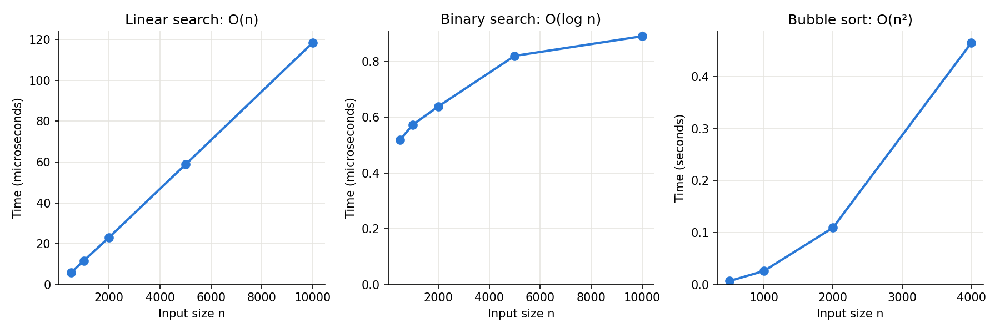

Chapter 16: Advanced Scripting Questions with Answers¶
Python Libraries for Data Structures and Algorithms
This page contains the answers to the 20 advanced scripting questions on Chapter 16 of the book. The questions are printed in the book. Here you will find, for each question, a full answer script, the output it produces, an explanation of how it works, and a few follow-up questions.
Chapter 16 covers two connected ideas:
- Algorithms: step-by-step methods for common jobs such as searching and sorting, and how to measure their speed using Big-O notation. Big-O describes how the work done by an algorithm grows as the amount of data grows. See Big O notation.
- The Python Standard Library: the ready-made modules that come with every Python installation, such as
collections,heapq,bisect,queue,enum,dataclasses,functools,itertools,pickleandjson. See the Python Standard Library.
These questions go a step further than the easier set. Many of them ask you to measure how fast something runs, to count the work an algorithm does, or to combine several tools into one small working program, such as an undo button, a print queue or a cache. This is how the ideas in the chapter are used in real programs.
The questions are grouped into two parts
| Part | Questions | What it covers |
|---|---|---|
| Part A: Algorithms written by hand | 1, 2, 3, 4, 5, 17 | Searching, sorting, stacks and queues, built and timed yourself |
| Part B: Standard Library tools | 6 to 16, 18, 19 | collections, heapq, bisect, enum, dataclasses, functools, itertools, pickle, json |
| Synthesis | 20 | Measuring and comparing Big-O growth |
How to use this page
- Read the question and try to write the script yourself first.
- Read "How It Works" for the logic in plain words.
- Copy the answer script into a
.pyfile and run it. Compare your output with the output shown. - Read the explanation, then try the follow-up questions.
All scripts were tested with Python 3.11 and work with Python 3.8 or later. Scripts that measure time will show different numbers on your computer, because timing depends on the machine and on what else it is doing. The pattern of the numbers is what matters. Scripts that use random data set a fixed seed with random.seed(), so that you get exactly the same "random" numbers as shown here.
Table of Contents¶
- Big-O Quick Reference
- Q1. Linear Search vs Binary Search Timing
- Q2. Bubble Sort with Early Exit
- Q3. Insertion Sort: Shifts vs Swaps
- Q4. Stack Class and the pop(0) Trap
- Q5. FIFO Queue and Producer-Consumer Threads
- Q6. Counter, defaultdict and ChainMap
- Q7. heapq: Min-Heap, Max-Heap and Priority Queue
- Q8. bisect: Duplicates, Leaderboard and Grade Lookup
- Q9. OrderedDict and an LRU Cache
- Q10. namedtuple in Practice
- Q11. dataclass Features
- Q12. Enum with auto()
- Q13. lru_cache and Fibonacci
- Q14. partial() and reduce()
- Q15. chain, islice and groupby
- Q16. combinations, permutations and product
- Q17. Selection Sort with Trace
- Q18. pickle and json with datetime
- Q19. deque Operations
- Q20. Big-O Timing Comparison
Big-O Quick Reference¶
Many answers on this page refer to these growth rates. n is the number of items.
| Notation | Name | Plain meaning | Example on this page |
|---|---|---|---|
O(1) |
Constant | Same work, however big the data | deque.popleft() |
O(log n) |
Logarithmic | Doubling the data adds one more step | Binary search |
O(n) |
Linear | Double the data, double the work | Linear search, list.pop(0) |
O(n log n) |
Linearithmic | A little more than linear | Python's sorted() |
O(n²) |
Quadratic | Double the data, four times the work | Bubble, insertion and selection sort |
O(2ⁿ) |
Exponential | Each extra item roughly doubles the work (upper bound) | Plain recursive Fibonacci |
A note on timing code
All timings use time.perf_counter(). It is a precise clock made for measuring how long code takes. Its value on its own means nothing; only the difference between two readings is useful.
Very short timings are "noisy". The computer is always doing other small jobs in the background, so the same code can take a slightly different time on each run. Several scripts below therefore run a test a few times and keep the fastest time, which is the one least disturbed by background activity.
Q1. Linear Search vs Binary Search Timing¶
Part A: Searching Algorithms
Implement both linear_search and binary_search. Time each against list sizes [1K–1M] using time.perf_counter(). Print a table showing n, linear time, binary time, and speedup factor.
1.1 How It Works¶
This script builds two search functions, times them against the same list sizes, and prints a side-by-side comparison table. The key ideas are:
- Linear search checks every element, one by one. It is
O(n). - Binary search halves the search space at every step. It is
O(log n). - Binary search requires a sorted list. It looks at the middle item and throws away the half where the target cannot be, which only works if the items are in order.
The plan:
- Write
linear_search(). - Write
binary_search(). - Choose list sizes from 1,000 to 1,000,000.
- Choose a target (
-1) that is never in the data. This forces the worst case for both searches: linear search must check every item, and binary search must halve all the way down. - For each size, build a random list and a sorted copy.
- Time each search several times and keep the fastest time.
- Work out the speedup: linear time divided by binary time.
- Print one row of the table.
flowchart TD
A["1. Take the next list size n"] --> B["2. Build random data and a sorted copy"]
B --> C["3. Time linear search on data, 5 runs, keep fastest"]
C --> D["4. Time binary search on sorted copy, 5 runs, keep fastest"]
D --> E["5. speedup = linear time / binary time"]
E --> F["6. Print n, both times and speedup"]
F --> G{"7. More sizes?"}
G -- "Yes" --> A
G -- "No" --> H["8. Print Big-O summary"]
1.2 Answer Script¶
"""
Linear Search vs Binary Search: O(n) vs O(log n)
Builds two search functions, times them against the same list sizes,
and prints a side-by-side comparison table.
"""
# Step 1 - Import required modules
import time
import random
# Step 2 - Implement linear search (no sorting needed)
def linear_search(data, target):
"""Return True if target found, else False. Checks every item."""
for item in data:
if item == target:
return True
return False
# Step 3 - Implement binary search (list MUST be sorted first)
def binary_search(data, target):
"""Return True if target found, by halving the search area each time."""
left, right = 0, len(data) - 1
while left <= right:
mid = (left + right) // 2 # // is whole-number division
if data[mid] == target:
return True
elif target > data[mid]:
left = mid + 1 # Discard left half
else:
right = mid - 1 # Discard right half
return False
# Step 4 - A helper that runs a search several times and keeps the fastest time
def fastest_time(search_function, data, target, runs=5):
best = float("inf") # start with "infinitely slow"
for _ in range(runs):
start = time.perf_counter()
search_function(data, target)
elapsed = time.perf_counter() - start
best = min(best, elapsed)
return best
# Step 5 - Define test sizes and a target that is never present
sizes = [1_000, 10_000, 100_000, 500_000, 1_000_000]
target = -1 # Guaranteed NOT in data -> worst case for both searches
print(f"{'n':>10} | {'Linear (s)':>12} | {'Binary (s)':>12} | {'Speedup':>10}")
print("-" * 53)
for n in sizes:
# Step 6 - Build the data
data = [random.randint(1, 1_000_000) for _ in range(n)]
sorted_data = sorted(data) # Binary search needs sorted input
# Step 7 - Time both searches
t_linear = fastest_time(linear_search, data, target)
t_binary = fastest_time(binary_search, sorted_data, target)
# Step 8 - Work out the speedup and print one row
speedup = t_linear / t_binary if t_binary > 0 else float("inf")
print(f"{n:>10,} | {t_linear:>12.8f} | {t_binary:>12.8f} | {speedup:>9,.0f}x")
# Step 9 - Print Big-O summary
print()
print("Big-O reminder:")
print(" Linear search: O(n) - comparisons grow with n")
print(" Binary search: O(log n) - 1,000,000 items need only about 20 comparisons")
1.3 Output¶
Your times will be different, but the pattern will be similar.
n | Linear (s) | Binary (s) | Speedup
-----------------------------------------------------
1,000 | 0.00001179 | 0.00000102 | 12x
10,000 | 0.00011356 | 0.00000123 | 93x
100,000 | 0.00114981 | 0.00000146 | 788x
500,000 | 0.00594947 | 0.00000123 | 4,849x
1,000,000 | 0.01205063 | 0.00000157 | 7,680x
Big-O reminder:
Linear search: O(n) - comparisons grow with n
Binary search: O(log n) - 1,000,000 items need only about 20 comparisons
1.4 Explanation¶
- Linear search time grows in step with
n. Going from 100,000 to 1,000,000 items (10 times more), the linear time also becomes roughly 10 times larger. - Binary search time hardly changes. For 1,000 items it needs about 10 halvings; for 1,000,000 items, about 20. That is only twice the work for a thousand times the data.
- So the speedup keeps growing as the list gets bigger. The larger the list, the more binary search wins.
Two points to keep in mind:
- The time taken to sort the list is not included. Sorting costs
O(n log n), which is more than a single linear search. Binary search pays off when you sort once and then search many times. - For the smallest list, the times are so short that background noise can make the speedup look uneven. That is why the script keeps the fastest of 5 runs.
1.5 Follow-up Questions¶
1.5.1 How many halvings does binary search need for 1,000,000 items, and how would you check it in Python?
About 20, because 2²⁰ is 1,048,576. In Python, math.log2(1_000_000) gives about 19.93.
1.5.2 If you had to search a list only once, which search would you choose?
Linear search. Sorting the list first (O(n log n)) would cost more than simply checking every item once (O(n)).
Q2. Bubble Sort with Early Exit¶
Part A: Sorting Algorithms
Code bubble_sort with an already_sorted early-exit flag. Run it on a worst-case (reverse-sorted) and best-case (sorted) list. Count and print total comparisons for various n to verify O(n²).
2.1 How It Works¶
Bubble sort compares neighbouring elements and swaps them if they are out of order. After each pass, the largest unsorted element "bubbles" up to its correct position at the end.
- Worst case,
O(n²): the list is in reverse order. Every pass is needed. - Best case,
O(n): the list is already sorted. With analready_sortedflag, the first pass finds no swaps and the sort stops at once.
The flag works like this:
- At the start of each pass, set
already_sorted = True(assume the list is sorted). - If any swap happens in the pass, set
already_sorted = False. - At the end of the pass, if
already_sortedis stillTrue, no item was out of order, so stop.
Counting comparisons. Without an early exit, the passes make (n - 1) + (n - 2) + ... + 1 comparisons, which adds up to n(n - 1)/2. The largest part of this is n²/2, so the count grows like n². A simple test: when n doubles, the count should become about four times larger.
flowchart TD
A["1. pass_no = 0"] --> B["2. already_sorted = True"]
B --> C["3. Compare each neighbouring pair in the unsorted part. comparisons + 1"]
C --> D{"4. Left item bigger than right item?"}
D -- "Yes" --> E["5. Swap and set already_sorted = False"]
D -- "No" --> F{"6. More pairs in this pass?"}
E --> F
F -- "Yes" --> C
F -- "No" --> G{"7. Is already_sorted still True?"}
G -- "Yes" --> H["8. Stop early: list is sorted"]
G -- "No" --> I{"9. More passes left?"}
I -- "Yes" --> J["10. pass_no = pass_no + 1"]
J --> B
I -- "No" --> K["11. Done"]
2.2 Answer Script¶
"""
Bubble Sort with an early-exit flag.
Worst case: O(n^2) - list is reverse-sorted
Best case: O(n) - list is already sorted (thanks to the early-exit flag)
"""
# Step 1 - Bubble sort with early-exit optimisation
def bubble_sort(numbers):
n = len(numbers)
for pass_no in range(n - 1):
already_sorted = True # Assume sorted until a swap occurs
# Inner loop: compare neighbours; the last pass_no items are already in place
for i in range(n - pass_no - 1):
if numbers[i] > numbers[i + 1]:
numbers[i], numbers[i + 1] = numbers[i + 1], numbers[i] # swap
already_sorted = False # A swap happened -> not sorted yet
if already_sorted: # No swaps in this pass -> done early
print(f" Early exit after pass {pass_no + 1}")
break
return numbers
# Step 2 - Demonstrate on worst-case (reverse sorted) input
data_worst = [6, 5, 4, 3, 2, 1]
print("Worst case (reverse sorted):")
print(" Input: ", data_worst)
print(" Output:", bubble_sort(data_worst.copy()))
# Step 3 - Demonstrate on best-case (already sorted) input
data_best = [1, 2, 3, 4, 5, 6]
print("Best case (already sorted):")
print(" Input: ", data_best)
print(" Output:", bubble_sort(data_best.copy()))
# Step 4 - The same sort, counting comparisons instead of printing
def bubble_sort_count(numbers, early_exit=True):
"""Return the total number of comparisons made while sorting."""
numbers = numbers[:] # work on a copy
n = len(numbers)
count = 0
for pass_no in range(n - 1):
already_sorted = True
for i in range(n - pass_no - 1):
count += 1
if numbers[i] > numbers[i + 1]:
numbers[i], numbers[i + 1] = numbers[i + 1], numbers[i]
already_sorted = False
if early_exit and already_sorted:
break
return count
# Step 5 - Count comparisons for several sizes
print()
print(f"{'n':>4} | {'Reversed':>9} | {'Sorted':>7} | {'n(n-1)/2':>9} | {'Growth vs previous n':>21}")
print("-" * 62)
previous = None
for size in [5, 10, 20, 40, 80]:
worst = bubble_sort_count(list(range(size, 0, -1))) # reverse sorted
best = bubble_sort_count(list(range(1, size + 1))) # already sorted
formula = size * (size - 1) // 2
growth = f"{worst / previous:.2f}x" if previous else "-"
print(f"{size:>4} | {worst:>9} | {best:>7} | {formula:>9} | {growth:>21}")
previous = worst
2.3 Output¶
Worst case (reverse sorted):
Input: [6, 5, 4, 3, 2, 1]
Output: [1, 2, 3, 4, 5, 6]
Best case (already sorted):
Input: [1, 2, 3, 4, 5, 6]
Early exit after pass 1
Output: [1, 2, 3, 4, 5, 6]
n | Reversed | Sorted | n(n-1)/2 | Growth vs previous n
--------------------------------------------------------------
5 | 10 | 4 | 10 | -
10 | 45 | 9 | 45 | 4.50x
20 | 190 | 19 | 190 | 4.22x
40 | 780 | 39 | 780 | 4.11x
80 | 3160 | 79 | 3160 | 4.05x
2.4 Explanation¶
- Worst case. The reversed list needed every pass. No "Early exit" message was printed.
- Best case. The sorted list printed "Early exit after pass 1": one pass with no swaps was enough to prove the list was sorted.
- The Reversed column matches
n(n-1)/2exactly. This confirms the formula. - The Growth column is close to 4x each time
ndoubles, and it gets closer to 4 asngrows (4.50, 4.22, 4.11, 4.05). This is the sign ofO(n²)growth. - The Sorted column is always
n - 1. With the early-exit flag, the best case grows only in step withn, which isO(n).
Why is the growth not exactly 4? Because n(n-1)/2 is not exactly n²/2. The -n part matters for small lists but becomes less and less important as n grows. Big-O keeps only the part that dominates for large n.
2.5 Follow-up Questions¶
2.5.1 Does the early-exit flag help on a list that is sorted except for the very first item, such as [9, 1, 2, 3, 4, 5]?
Very little. The 9 moves only one place to the right per pass, so every pass has a swap until the 9 reaches the end. The flag helps most when the list is fully or almost fully sorted with small items near the front out of place.
2.5.2 Why does bubble_sort_count begin with numbers = numbers[:]?
To sort a copy. Otherwise the function would change the caller's list, and later tests using the same list would start from sorted data.
Q3. Insertion Sort: Shifts vs Swaps¶
Part A: Sorting Algorithms
Implement insertion_sort using the shift (not swap) approach. Count shifts vs swaps compared to bubble_sort on the same random list. Explain why fewer writes matter in practice.
3.1 How It Works¶
Insertion sort works like sorting playing cards in your hand:
- Pick the next card (the key).
- Slide it left past any larger cards. The larger cards shift one place to the right; they are not swapped.
- Place the key in the gap that opens up.
Although its worst case is still O(n²), insertion sort:
- Makes fewer writes (changes to the list) than bubble sort, because it shifts instead of swapping.
- Is
O(n)for nearly-sorted data. - Is stable: equal elements keep their original order.
An important fact about the counts. On the same list, the number of insertion sort shifts is always equal to the number of bubble sort swaps. Both are equal to the number of inversions in the list. An inversion is a pair of items in the wrong order, for example 41 before 14. Each bubble sort swap fixes exactly one inversion, and so does each insertion sort shift.
So counting shifts against swaps gives the same number. The real difference is in the writes:
| Operation | Writes to the list | Why |
|---|---|---|
| One bubble sort swap | 2 | Both positions are written: a[i], a[i+1] = a[i+1], a[i] |
| One insertion sort shift | 1 | Only one position is written: a[j+1] = a[j] |
| Placing one insertion sort key | 1 | The key is written once into its gap (only needed if it moved) |
(If a swap is done by hand with a temporary variable, it takes 3 assignments, which makes the difference even larger.)
flowchart TD
A["1. i = 1"] --> B["2. key = numbers at i. j = i - 1"]
B --> C{"3. j at least 0 AND numbers at j bigger than key?"}
C -- "Yes" --> D["4. Shift: numbers at j + 1 = numbers at j. shifts + 1"]
D --> E["5. j = j - 1"]
E --> C
C -- "No" --> F["6. Place: numbers at j + 1 = key"]
F --> G{"7. More items?"}
G -- "Yes" --> H["8. i = i + 1"]
H --> B
G -- "No" --> I["9. Sorted"]
3.2 Answer Script¶
"""
Insertion Sort: card-analogy implementation, and a count of
shifts, swaps and memory writes compared with bubble sort.
"""
import random
# Step 1 - Implement insertion sort
def insertion_sort(numbers):
for i in range(1, len(numbers)):
key = numbers[i] # The 'card' we are about to insert
j = i - 1
# Step 1a: Shift larger elements one position to the right
while j >= 0 and numbers[j] > key:
numbers[j + 1] = numbers[j] # Shift (1 write, not a swap)
j -= 1
# Step 1b: Place the key in its correct position
numbers[j + 1] = key
return numbers
# Step 2 - Test with sample data
sample = [29, 10, 14, 37, 13]
print("Input: ", sample)
print("Sorted:", insertion_sort(sample.copy()))
# Step 3 - Insertion sort that counts shifts and total writes
def insertion_sort_counts(numbers):
shifts = 0
writes = 0
for i in range(1, len(numbers)):
key = numbers[i]
j = i - 1
while j >= 0 and numbers[j] > key:
numbers[j + 1] = numbers[j]
j -= 1
shifts += 1
writes += 1 # each shift writes one position
if j + 1 != i: # the key actually moved
numbers[j + 1] = key
writes += 1 # placing the key is one more write
return shifts, writes
# Step 4 - Bubble sort that counts swaps and total writes
def bubble_sort_counts(numbers):
swaps = 0
n = len(numbers)
for pass_no in range(n - 1):
for i in range(n - pass_no - 1):
if numbers[i] > numbers[i + 1]:
numbers[i], numbers[i + 1] = numbers[i + 1], numbers[i]
swaps += 1
writes = swaps * 2 # each swap writes two positions
return swaps, writes
# Step 5 - Count inversions directly, to show where the numbers come from
def count_inversions(numbers):
n = len(numbers)
return sum(1 for a in range(n) for b in range(a + 1, n) if numbers[a] > numbers[b])
# Step 6 - Compare on the same random list
random.seed(7) # fixed seed: same list every run
test = random.sample(range(50), 10) # 10 different numbers from 0 to 49
print(f"\nList: {test}")
print(f"Inversions in the list: {count_inversions(test)}")
shifts, ins_writes = insertion_sort_counts(test.copy())
swaps, bub_writes = bubble_sort_counts(test.copy())
print(f"Insertion sort: {shifts} shifts -> {ins_writes} writes")
print(f"Bubble sort: {swaps} swaps -> {bub_writes} writes")
print(f"Bubble sort made {bub_writes / ins_writes:.1f}x as many writes")
# Step 7 - The gap grows on bigger lists
random.seed(7)
big = random.sample(range(10_000), 1_000)
_, ins_writes = insertion_sort_counts(big.copy())
_, bub_writes = bubble_sort_counts(big.copy())
print(f"\n1,000 items: insertion writes = {ins_writes:,}, bubble writes = {bub_writes:,}")
3.3 Output¶
Input: [29, 10, 14, 37, 13]
Sorted: [10, 13, 14, 29, 37]
List: [20, 9, 25, 41, 3, 4, 34, 6, 23, 37]
Inversions in the list: 19
Insertion sort: 19 shifts -> 26 writes
Bubble sort: 19 swaps -> 38 writes
Bubble sort made 1.5x as many writes
1,000 items: insertion writes = 257,578, bubble writes = 513,174
3.4 Explanation¶
- Shifts equal swaps. On the same list, insertion sort's shift count and bubble sort's swap count came out identical, and both equal the number of inversions. This is not a coincidence; it is always true.
- Writes are not equal. Each swap writes two positions, while each shift writes only one. Insertion sort also writes each key once when placing it. On this short list, bubble sort made 1.5 times as many writes.
- The gap widens on bigger lists. On 1,000 items, bubble sort made almost exactly twice as many writes. On a longer list, the one extra write for placing each key matters less and less compared with the many shifts.
Why fewer writes matter in practice
- Speed. Writing to memory takes time. Fewer writes means less work for the computer, even when the Big-O class is the same.
- Comparisons too. Insertion sort stops comparing as soon as it finds a key's gap. Bubble sort (without early exit) always walks the full inner loop, so on partly sorted data insertion sort also makes far fewer comparisons.
- Wear on storage. Some storage, such as flash memory, wears out a little with every write. There, fewer writes means longer life.
Big-O notation ignores constant factors like "2 writes instead of 1". Real hardware does not. That is why insertion sort is usually faster than bubble sort in practice, even though both are O(n²).
3.5 Follow-up Questions¶
3.5.1 How many shifts does insertion sort make on a list that is already sorted?
Zero. There are no inversions, so no item ever needs to move.
3.5.2 What is the largest possible number of inversions in a list of n items?
n(n - 1)/2, when the list is in reverse order. Every pair is in the wrong order. For 10 items, that is 45.
Q4. Stack Class and the pop(0) Trap¶
Part A: Stacks and Queues (Manual Implementation)
Build a Stack class (LIFO) using a plain list. Simulate an undo-button. Then benchmark list.pop(0) vs deque.popleft() for N=100,000 front-removals and print the speedup.
4.1 How It Works¶
A stack follows Last-In First-Out (LIFO) order: the last item added is the first one removed. Built with a plain Python list:
| Stack operation | List method | Cost | Where it works |
|---|---|---|---|
| push | list.append(item) |
O(1) |
the end of the list |
| pop | list.pop() |
O(1) |
the end of the list |
| peek | list[-1] |
O(1) |
the end of the list |
A common mistake is removing from the front with list.pop(0). That is O(n), because Python must shift every remaining element one place to the left to fill the gap. Doing it n times costs O(n²) in total.
The solution for front removal is collections.deque. Inside CPython (the standard Python interpreter) a deque is a doubly-linked list of blocks, so it can add and remove at either end in O(1) without moving any other items.
Plan for the script:
- Write a
Stackclass withpush,pop,peek,is_emptyand a readable__repr__. - Use it to simulate an undo button.
- Time 100,000 front-removals with
list.pop(0). - Time 100,000 front-removals with
deque.popleft(). - Print both times and the speedup.
4.2 Answer Script¶
"""
Stack (LIFO) and the pop(0) performance trap.
"""
from collections import deque
import time
# Step 1 - Stack using list (correct: push/pop at the END)
class Stack:
def __init__(self):
self._data = [] # the leading _ means "for use inside the class"
def push(self, item):
self._data.append(item) # O(1)
def pop(self):
if self.is_empty():
raise IndexError("Stack is empty")
return self._data.pop() # O(1) - removes from END
def peek(self):
if self.is_empty():
raise IndexError("Stack is empty")
return self._data[-1] # look at the top without removing it
def is_empty(self):
return len(self._data) == 0
def __repr__(self): # controls how the object looks when printed
return f"Stack({self._data})"
# Step 2 - Demonstrate undo-button simulation using a stack
actions = Stack()
actions.push("Type 'Hello'")
actions.push("Bold text")
actions.push("Insert image")
print("After 3 actions:", actions)
print("Next undo would reverse:", actions.peek())
print("Undo:", actions.pop()) # Most recent first
print("Undo:", actions.pop())
print("After 2 undos:", actions)
# Step 3 - Undoing past the start raises an error
actions.pop()
try:
actions.pop()
except IndexError as error:
print("Undo with nothing left:", error)
# Step 4 - Benchmark list.pop(0) vs deque.popleft()
N = 100_000
lst = list(range(N))
t0 = time.perf_counter()
for _ in range(N):
lst.pop(0) # O(n) - shifts all remaining items left
t_list = time.perf_counter() - t0
dq = deque(range(N))
t1 = time.perf_counter()
for _ in range(N):
dq.popleft() # O(1) - no shifting needed
t_deque = time.perf_counter() - t1
# Step 5 - Print the results
print(f"\nRemoving {N:,} items from the front:")
print(f" list.pop(0): {t_list:.4f} s <- O(n) per call")
print(f" deque.popleft(): {t_deque:.4f} s <- O(1) per call")
print(f" Deque is {t_list / t_deque:,.0f}x faster for front removal")
4.3 Output¶
Your times will differ. The speedup can vary a lot from computer to computer, but the deque is always much faster.
After 3 actions: Stack(["Type 'Hello'", 'Bold text', 'Insert image'])
Next undo would reverse: Insert image
Undo: Insert image
Undo: Bold text
After 2 undos: Stack(["Type 'Hello'"])
Undo with nothing left: Stack is empty
Removing 100,000 items from the front:
list.pop(0): 0.9070 s <- O(n) per call
deque.popleft(): 0.0048 s <- O(1) per call
Deque is 188x faster for front removal
4.4 Explanation¶
- The undo simulation shows LIFO order. "Insert image" was the last action, so it was the first to be undone.
peek()showed the top item without removing it.- Calling
pop()on an empty stack raised anIndexErrorwith a clear message. In a real editor you would disable the Undo button instead. - The benchmark shows the
pop(0)trap. Eachpop(0)moves all the remaining items, so the total work is aboutn²/2item moves: roughly 5 billion for 100,000 items. Eachpopleft()moves nothing.
Why is list.pop(0) not even slower? Moving the items is done in one fast block-copy inside CPython. It is still O(n) per call, and doubling N would roughly quadruple the list time, while the deque time would only double.
4.5 Follow-up Questions¶
4.5.1 Why does the Stack class use append() and pop() at the end rather than insert(0, x) and pop(0) at the front?
Both would give LIFO order, but working at the front of a list is O(n). Working at the end is O(1).
4.5.2 How would you add a size() method to the class?
def size(self):
return len(self._data)
Adding __len__ instead would let you write len(actions).
Q5. FIFO Queue and Producer-Consumer Threads¶
Part A: Stacks and Queues (Manual Implementation)
Implement a FIFO queue using deque. Then build a producer-consumer simulation using queue.Queue with a None sentinel to signal end-of-work across two threads.
5.1 How It Works¶
A queue follows First-In First-Out (FIFO) order, like people waiting in a line.
- In single-threaded programs, use
collections.deque. It is fast and simple. - In multi-threaded programs, where several threads share the queue, use queue.Queue. It is thread-safe, and its
get()method can block (wait) until an item arrives.
A few terms:
- A thread is a separate line of work running at the same time as others inside one program. See threading.
- Thread-safe means several threads can use the object at once without corrupting its data.
- A producer is a thread that creates work and puts it in the queue. A consumer is a thread that takes work out and does it.
- A sentinel is a special value that means "stop". Here it is
None. It tells the consumer that no more items are coming.
Part A builds a FIFOQueue class around a deque and uses it as a print spooler (a queue of documents waiting to be printed).
Part B runs two threads:
- The producer creates three jobs, one every 0.1 seconds, and puts each in the queue.
- The consumer waits on
get(), takes each job as it arrives, and processes it. - When the producer has finished, it puts
Nonein the queue. - The consumer sees
Noneand leaves its loop. - The main program waits for both threads to finish with
join().
Because two threads print at the same time, their lines could get mixed together. The script uses a lock so that only one thread prints at a time.
flowchart TD
A["1. Start producer and consumer threads"] --> B["2. Producer puts job-A, job-B, job-C with short pauses"]
B --> C["3. Producer puts None as the sentinel"]
A --> D["4. Consumer calls get and waits for an item"]
D --> E{"5. Is the item None?"}
E -- "No" --> F["6. Process the job and call task_done"]
F --> D
E -- "Yes" --> G["7. Call task_done and leave the loop"]
C --> H["8. Main program joins both threads"]
G --> H
H --> I["9. Program ends"]
5.2 Answer Script¶
"""
Queue (FIFO): deque for a single thread, queue.Queue for several threads.
The None-sentinel pattern tells the worker that no more items are coming.
"""
from collections import deque
from queue import Queue
import threading
import time
# --- Part A: FIFO Queue with deque (single-threaded) ---
# Step 1 - A FIFOQueue class built on deque
class FIFOQueue:
def __init__(self):
self._data = deque()
def enqueue(self, item):
self._data.append(item) # Add to RIGHT (rear)
def dequeue(self):
if self.is_empty():
raise IndexError("Queue is empty")
return self._data.popleft() # Remove from LEFT (front) - O(1)
def is_empty(self):
return len(self._data) == 0
def __repr__(self):
return f"Queue(front-> {list(self._data)} <-rear)"
# Step 2 - Simulate a print spooler
spooler = FIFOQueue()
spooler.enqueue("Report.pdf")
spooler.enqueue("Invoice.docx")
spooler.enqueue("Photo.png")
print("Print queue:", spooler)
print("Printing:", spooler.dequeue()) # First job goes first
print("Printing:", spooler.dequeue())
print("Remaining:", spooler)
# --- Part B: Thread-safe queue with None-sentinel pattern ---
print("\n--- Multi-threaded producer/consumer ---")
job_queue = Queue()
print_lock = threading.Lock() # only one thread may print at a time
def safe_print(message):
with print_lock:
print(message)
# Step 3 - The producer creates jobs, then sends the sentinel
def producer():
jobs = ["job-A", "job-B", "job-C"]
for job in jobs:
time.sleep(0.1) # pretend it takes time to create a job
safe_print(f" Produced: {job}")
job_queue.put(job)
job_queue.put(None) # Sentinel: 'no more jobs'
safe_print(" Producer sent the stop signal.")
# Step 4 - The consumer processes jobs until it receives the sentinel
def consumer():
while True:
item = job_queue.get() # Blocks (waits) until an item is available
if item is None: # Sentinel received -> stop
job_queue.task_done()
safe_print(" Consumer done.")
break
safe_print(f" Consumed: {item}")
job_queue.task_done() # Tell the queue this item is finished
# Step 5 - Start both threads and wait for them to finish
t1 = threading.Thread(target=producer)
t2 = threading.Thread(target=consumer)
t1.start()
t2.start()
t1.join()
t2.join()
print("Both threads finished.")
5.3 Output¶
Print queue: Queue(front-> ['Report.pdf', 'Invoice.docx', 'Photo.png'] <-rear)
Printing: Report.pdf
Printing: Invoice.docx
Remaining: Queue(front-> ['Photo.png'] <-rear)
--- Multi-threaded producer/consumer ---
Produced: job-A
Consumed: job-A
Produced: job-B
Consumed: job-B
Produced: job-C
Producer sent the stop signal.
Consumed: job-C
Consumer done.
Both threads finished.
5.4 Explanation¶
Part A
- The print jobs came out in the order they went in: Report.pdf first, then Invoice.docx. Photo.png was still waiting.
Part B
- Each job was produced first and consumed straight after. The consumer spent most of its time waiting inside
get(), using no processor time, until the producer supplied the next job. - After the last job, the producer put
Nonein the queue. - The consumer received
None, printed "Consumer done." and left its loop. t1.join()andt2.join()made the main program wait for both threads, so "Both threads finished." is always printed last.
Why the lock? print() writes the text and the line break as separate steps. Without a lock, two threads printing at the same instant can mix their output on one line. The lock makes each print() finish before another thread can start one.
Because threads run at the same time, the exact order of lines around each hand-over can change slightly from run to run. With the 0.1-second pauses, the order shown is what you will almost always see.
5.5 Follow-up Questions¶
5.5.1 If there were three consumer threads, how many None sentinels would the producer need to send?
Three, one per consumer. Each consumer stops after taking a single None, so every consumer must receive its own.
5.5.2 What would happen if the producer forgot to send the sentinel?
The consumer would wait inside get() forever, t2.join() would never return, and the program would hang.
Q6. Counter, defaultdict and ChainMap¶
Part B: collections Module
Use Counter to find word frequencies in a sentence and the top-3 words. Use defaultdict(list) to group students by grade. Use ChainMap to layer session → user → default config settings.
6.1 How It Works¶
The collections module solves three common counting and grouping patterns:
| Tool | What it does | Main benefit |
|---|---|---|
Counter |
Counts how often each element occurs | most_common() gives the top items directly |
defaultdict |
Creates a starting value for a missing key automatically | No KeyError, no "if key not in dict" check |
ChainMap |
Searches several dictionaries in order without copying them | Layered settings where earlier layers override later ones |
Counter arithmetic. Counters can be combined:
| Expression | Meaning |
|---|---|
c1 + c2 |
Adds the counts for each item |
c1 - c2 |
Subtracts counts and keeps only results above zero |
c1 \| c2 |
Union: keeps the larger count for each item |
c1 & c2 |
Intersection: keeps the smaller count for each item |
ChainMap order. ChainMap(session, user_prefs, defaults) searches from left to right, and the first match wins. So a session setting beats a user setting, and a user setting beats a default. Any write through the ChainMap goes to the first dictionary (session) only.
6.2 Answer Script¶
"""
collections: Counter, defaultdict and ChainMap
Counter - count occurrences of elements (-> most_common)
defaultdict - auto-initialise missing keys (-> no KeyError)
ChainMap - search several dicts without copying them (-> layered lookup)
"""
from collections import Counter, defaultdict, ChainMap
# --- Part A: Counter - word frequency ---
# Step 1: Count words in a sentence
sentence = "to be or not to be that is the question to be"
word_count = Counter(sentence.split())
print("Word frequencies:")
print(word_count)
# Step 2: most_common() returns the n most frequent elements
print("Top 3 words:", word_count.most_common(3))
# Step 3: Counter arithmetic - combine two counters
c1 = Counter("aabbcc")
c2 = Counter("bbccdd")
print("c1:", c1)
print("c2:", c2)
print("Sum (c1 + c2):", c1 + c2)
print("Difference (c1 - c2):", c1 - c2)
print("Union (c1 | c2):", c1 | c2)
print("Intersection (c1 & c2):", c1 & c2)
# --- Part B: defaultdict - group students by grade ---
"""
defaultdict(list) creates an empty list automatically for each new key.
Without it you would write:
if grade not in grade_groups:
grade_groups[grade] = []
grade_groups[grade].append(name)
defaultdict removes that repeated code entirely.
"""
# Step 4: Group names under their grade
students = [("Alice", "A"), ("Bob", "B"), ("Carol", "A"), ("Dave", "B"), ("Eve", "A")]
grade_groups = defaultdict(list) # Missing key -> auto-create empty list
for name, grade in students:
grade_groups[grade].append(name)
print("\nStudents by grade:")
for grade, names in sorted(grade_groups.items()):
print(f" Grade {grade}: {names}")
# Step 5: defaultdict(int) - a missing key starts at 0 (useful for counting)
char_count = defaultdict(int)
for ch in "mississippi":
char_count[ch] += 1 # No KeyError even the first time
print("\nChar count:", dict(char_count))
# --- Part C: ChainMap - configuration layering ---
# Step 6: Three layers of settings
defaults = {"theme": "light", "lang": "en", "font": "Arial"}
user_prefs = {"theme": "dark", "font": "Consolas"}
session = {"lang": "fr"}
# Step 7: ChainMap searches left to right; first match wins
config = ChainMap(session, user_prefs, defaults)
print("\nEffective configuration:")
for key in ["theme", "lang", "font"]:
# config.maps is the list of dictionaries, in search order
source = next(name for name, layer in zip(["session", "user_prefs", "defaults"], config.maps)
if key in layer)
print(f" {key}: {config[key]} (from {source})")
# Step 8: Writes go to the FIRST map only
config["theme"] = "high-contrast"
print("After update - session:", dict(session))
print("user_prefs unchanged: ", dict(user_prefs))
6.3 Output¶
Word frequencies:
Counter({'to': 3, 'be': 3, 'or': 1, 'not': 1, 'that': 1, 'is': 1, 'the': 1, 'question': 1})
Top 3 words: [('to', 3), ('be', 3), ('or', 1)]
c1: Counter({'a': 2, 'b': 2, 'c': 2})
c2: Counter({'b': 2, 'c': 2, 'd': 2})
Sum (c1 + c2): Counter({'b': 4, 'c': 4, 'a': 2, 'd': 2})
Difference (c1 - c2): Counter({'a': 2})
Union (c1 | c2): Counter({'a': 2, 'b': 2, 'c': 2, 'd': 2})
Intersection (c1 & c2): Counter({'b': 2, 'c': 2})
Students by grade:
Grade A: ['Alice', 'Carol', 'Eve']
Grade B: ['Bob', 'Dave']
Char count: {'m': 1, 'i': 4, 's': 4, 'p': 2}
Effective configuration:
theme: dark (from user_prefs)
lang: fr (from session)
font: Consolas (from user_prefs)
After update - session: {'lang': 'fr', 'theme': 'high-contrast'}
user_prefs unchanged: {'theme': 'dark', 'font': 'Consolas'}
6.4 Explanation¶
Counter
- "to" and "be" each appear 3 times. The other words appear once.
- In
most_common(3), the third place is a tie between many words with a count of 1. Ties keep the order in which the words were first seen, so "or" was chosen. c1 + c2added the counts: b is 2 + 2 = 4.c1 - c2removed the b's and c's completely (2 - 2 = 0) and kept only "a".c1 | c2kept the larger count of each letter, andc1 & c2kept only letters found in both, with the smaller count.
defaultdict
- Each grade's list was created automatically the first time that grade appeared.
sorted(grade_groups.items())printed the grades in alphabetical order.- With
defaultdict(int), every new letter started at 0, so+= 1worked from the first time.
ChainMap
themecame fromuser_prefs,langfromsession, andfontfromuser_prefs. The "(from ...)" note, found by checkingconfig.maps, shows which layer supplied each value.- Setting
config["theme"]stored the new value insession, the first dictionary.user_prefsanddefaultswere not changed.
6.5 Follow-up Questions¶
6.5.1 How would you count words without caring about capital letters, so that "To" and "to" are the same?
Lowercase the sentence first: Counter(sentence.lower().split()).
6.5.2 How can you see all the settings in a ChainMap as one ordinary dictionary?
dict(config). This builds a new dictionary using the ChainMap's lookup rules, so each key gets the value from the highest-priority layer.
Q7. heapq: Min-Heap, Max-Heap and Priority Queue¶
Part B: heapq Module
Using heapq, build a min-heap from a list of marks and pop all elements in ascending order. Simulate a max-heap using negation. Build a priority task queue using (priority, task) tuples.
7.1 How It Works¶
A heap is a tree stored as a plain Python list, where:
| Rule | Index |
|---|---|
| The smallest element (min-heap) | heap[0] |
Parent of the item at index i |
(i - 1) // 2 |
Children of the item at index i |
2*i + 1 and 2*i + 2 |
The only promise is that every parent is smaller than or equal to its children. The list is not fully sorted.
Python's heapq module implements a min-heap. To simulate a max-heap, store the values as negatives: the largest original value becomes the most negative, and so comes out first. Negate again when popping to get the real value back.
A common use is a priority queue: always process the most important task next.
| Function | What it does | Cost |
|---|---|---|
heapq.heapify(list) |
Rearranges a list into heap order, in place | O(n) |
heapq.heappush(heap, item) |
Adds an item and keeps the heap rule | O(log n) |
heapq.heappop(heap) |
Removes and returns the smallest item | O(log n) |
heap[0] |
Looks at the smallest item without removing it | O(1) |
After heapify, the marks list [41, 55, 60, 92, 88, 73] forms this tree:
flowchart TD
A["index 0: 41"] --> B["index 1: 55"]
A --> C["index 2: 60"]
B --> D["index 3: 92"]
B --> E["index 4: 88"]
C --> F["index 5: 73"]
Check the rule: 41 is smaller than 55 and 60; 55 is smaller than 92 and 88; 60 is smaller than 73.
7.2 Answer Script¶
"""
heapq: min-heap, max-heap (negation trick) and a priority queue.
"""
import heapq
# --- Part A: Min-heap basics ---
# Step 1: Build heap from a list
marks = [55, 92, 73, 41, 88, 60]
heapq.heapify(marks) # Rearranges in place -> O(n)
print("Min-heap after heapify:", marks)
print("Smallest element (heap[0]):", marks[0])
# Step 2: Check the parent/child rule for every parent
for i in range(len(marks) // 2):
children = [marks[c] for c in (2 * i + 1, 2 * i + 2) if c < len(marks)]
print(f" parent {marks[i]} at index {i} -> children {children}")
# Step 3: Push a new element
heapq.heappush(marks, 35)
print("After pushing 35:", marks)
print("New minimum:", marks[0])
# Step 4: Pop elements in sorted (ascending) order
print("Popping all in ascending order:", end=" ")
temp = marks[:] # pop from a copy so 'marks' is kept
while temp:
print(heapq.heappop(temp), end=" ")
print()
# --- Part B: Max-heap using negation trick ---
"""
Max-heap trick: store every value as its negative.
push: heappush(h, -value)
peek: -h[0]
pop: -heappop(h)
"""
# Step 5: Push negated scores
scores = [55, 92, 73, 41, 88]
max_heap = []
for score in scores:
heapq.heappush(max_heap, -score) # Negate before pushing
print("\nStored (negated) heap:", max_heap)
# Step 6: Pop the three largest
print("Top 3 scores (max-heap):")
for _ in range(3):
print(" ", -heapq.heappop(max_heap)) # Negate again when popping
# --- Part C: Priority queue with tuples ---
# Step 7: Tuples (priority, task_name) - heapq compares the first element first
task_queue = []
heapq.heappush(task_queue, (3, "Send email"))
heapq.heappush(task_queue, (1, "Fix crash bug")) # Highest priority
heapq.heappush(task_queue, (2, "Write unit tests"))
# Step 8: Process tasks in priority order
print("\nProcessing tasks by priority:")
while task_queue:
priority, task = heapq.heappop(task_queue)
print(f" Priority {priority}: {task}")
7.3 Output¶
Min-heap after heapify: [41, 55, 60, 92, 88, 73]
Smallest element (heap[0]): 41
parent 41 at index 0 -> children [55, 60]
parent 55 at index 1 -> children [92, 88]
parent 60 at index 2 -> children [73]
After pushing 35: [35, 55, 41, 92, 88, 73, 60]
New minimum: 35
Popping all in ascending order: 35 41 55 60 73 88 92
Stored (negated) heap: [-92, -88, -73, -41, -55]
Top 3 scores (max-heap):
92
88
73
Processing tasks by priority:
Priority 1: Fix crash bug
Priority 2: Write unit tests
Priority 3: Send email
7.4 Explanation¶
heapifyturned[55, 92, 73, 41, 88, 60]into a valid heap with 41 at the front. The parent/child check confirms that each parent is smaller than its children.- Pushing 35 moved it up the tree until it reached the top, because it is the new smallest value.
- Popping repeatedly gave all the marks in ascending order. (This is the idea behind a sorting method called heapsort.)
- In the max-heap, the stored values are negative. -92 is the smallest stored value, so it came out first and was turned back into 92.
- The tasks were processed as 1, 2, 3, regardless of the order they were added in.
Note that the list after pushing 35, [35, 55, 41, 92, 88, 73, 60], is not sorted. That is expected. A heap only keeps the smallest item at the front.
7.5 Follow-up Questions¶
7.5.1 Is there a shorter way to get the 3 largest scores?
Yes: heapq.nlargest(3, scores) returns [92, 88, 73]. There is also heapq.nsmallest(). From Python 3.14, heapq also has built-in max-heap functions such as heappush_max() and heappop_max().
7.5.2 What goes wrong if two tasks share a priority and the second tuple items cannot be compared?
Python compares the second items to break the tie. If they cannot be compared (for example, two dictionaries), a TypeError is raised. Adding a running counter, (priority, counter, task), avoids this.
Q8. bisect: Duplicates, Leaderboard and Grade Lookup¶
Part B: bisect Module
Use bisect.bisect_left and bisect_right on a sorted list with duplicates. Use insort() to maintain a sorted leaderboard. Build a grade-boundary lookup table using bisect on threshold lists.
8.1 How It Works¶
The bisect module keeps a sorted list sorted, using binary search:
| Function | What it returns or does |
|---|---|
bisect_left(a, x) |
The index where x would go, to the left of any equal items |
bisect_right(a, x) |
The index where x would go, to the right of any equal items. Plain bisect() is the same |
insort(a, x) |
Inserts x at the correct position. Finding the spot is O(log n); shifting later items is O(n). No full re-sort is needed |
Typical uses are leaderboards, grade thresholds and live streams of data that must stay in order.
Grade lookup. Think of the thresholds as fence posts. bisect(breakpoints, score) counts how many fence posts the score has reached or passed. That count is used as the index into the list of grades.
| Score range | Posts reached (out of 40, 55, 65, 75, 85) | bisect result |
Grade |
|---|---|---|---|
| below 40 | none | 0 | F |
| 40 to 54 | 40 | 1 | D |
| 55 to 64 | 40, 55 | 2 | C |
| 65 to 74 | 40, 55, 65 | 3 | B |
| 75 to 84 | 40, 55, 65, 75 | 4 | A- |
| 85 and above | all five | 5 | A |
There must always be one more grade than there are breakpoints.
flowchart TD
A["1. Take a score"] --> B["2. index = bisect of breakpoints and score"]
B --> C["3. grade = grades at index"]
C --> D["4. Print score and grade"]
D --> E{"5. More scores?"}
E -- "Yes" --> A
E -- "No" --> F["6. Done"]
8.2 Answer Script¶
"""
bisect: keeping a sorted list sorted without re-sorting.
"""
import bisect
# --- Part A: bisect_left vs bisect_right ---
# Step 1: A sorted list with three copies of 30
scores = [10, 20, 30, 30, 30, 40, 50]
pos_left = bisect.bisect_left(scores, 30)
pos_right = bisect.bisect_right(scores, 30)
print(f"Sorted list: {scores}")
print(f"bisect_left (30): index {pos_left} -> insert BEFORE existing 30s")
print(f"bisect_right(30): index {pos_right} -> insert AFTER existing 30s")
# Step 2: A neat use - count how many 30s there are
print(f"Number of 30s: {pos_right - pos_left}")
# Step 3: For a value NOT in the list, both give the same answer
print(f"bisect_left(35) = {bisect.bisect_left(scores, 35)}, "
f"bisect_right(35) = {bisect.bisect_right(scores, 35)}")
# --- Part B: insort - insert while keeping list sorted ---
# Step 4: Add new scores to a leaderboard
leaderboard = [45, 60, 72, 88, 95]
print(f"\nLeaderboard before: {leaderboard}")
bisect.insort(leaderboard, 78) # No need to sort again
print(f"After insort(78): {leaderboard}")
bisect.insort(leaderboard, 55)
print(f"After insort(55): {leaderboard}")
# Step 5: Show the top 3 (largest are at the end, so reverse)
print(f"Top 3: {leaderboard[::-1][:3]}")
# --- Part C: Grade boundary lookup using bisect ---
"""
Classic bisect pattern: map a numeric score to a letter grade.
breakpoints = thresholds; grades = labels (one more label than thresholds).
bisect.bisect(breakpoints, score) gives the correct label index.
"""
# Step 6: Thresholds and grades
breakpoints = [40, 55, 65, 75, 85]
grades = ["F", "D", "C", "B", "A-", "A"]
# Step 7: Look up several scores, including ones exactly on a boundary
test_scores = [35, 40, 50, 63, 74, 75, 80, 92]
print("\nGrade lookup using bisect:")
for s in test_scores:
index = bisect.bisect(breakpoints, s)
grade = grades[index]
print(f" Score {s:3d} -> index {index} -> Grade {grade}")
8.3 Output¶
Sorted list: [10, 20, 30, 30, 30, 40, 50]
bisect_left (30): index 2 -> insert BEFORE existing 30s
bisect_right(30): index 5 -> insert AFTER existing 30s
Number of 30s: 3
bisect_left(35) = 5, bisect_right(35) = 5
Leaderboard before: [45, 60, 72, 88, 95]
After insort(78): [45, 60, 72, 78, 88, 95]
After insort(55): [45, 55, 60, 72, 78, 88, 95]
Top 3: [95, 88, 78]
Grade lookup using bisect:
Score 35 -> index 0 -> Grade F
Score 40 -> index 1 -> Grade D
Score 50 -> index 1 -> Grade D
Score 63 -> index 2 -> Grade C
Score 74 -> index 3 -> Grade B
Score 75 -> index 4 -> Grade A-
Score 80 -> index 4 -> Grade A-
Score 92 -> index 5 -> Grade A
8.4 Explanation¶
- In
[10, 20, 30, 30, 30, 40, 50], the 30s occupy indexes 2, 3 and 4.bisect_leftreturned 2 (before them) andbisect_rightreturned 5 (after them). - The difference
5 - 2 = 3is the number of 30s. This is a fast way to count a value in a sorted list. - For 35, which is not in the list, both functions returned the same index, 5.
insortplaced 78 between 72 and 88, and 55 between 45 and 60, so the leaderboard stayed sorted without callingsort().- In the grade lookup, a score exactly on a boundary, such as 40 or 75, gets the higher grade. This is because
bisect()isbisect_right(), which places an equal value after the threshold. If you usedbisect_left(), a score of 40 would wrongly get an F.
8.5 Follow-up Questions¶
8.5.1 How would you keep a leaderboard sorted from highest to lowest instead?
bisect only works with ascending order (in Python 3.10 and later you can also pass a key function, but the list order must still match it). The simplest approach is to keep the list ascending and reverse it for display, as in Step 5.
8.5.2 What would grades[bisect.bisect(breakpoints, 100)] give?
"A". 100 has passed all five thresholds, so the index is 5.
Q9. OrderedDict and an LRU Cache¶
Part B: collections.OrderedDict
Demonstrate all extra methods OrderedDict provides over a plain dict (move_to_end, popitem). Build a working LRU cache class using OrderedDict with a fixed capacity and eviction on overflow.
9.1 How It Works¶
Since Python 3.7, plain dicts already keep items in insertion order. OrderedDict still exists because it gives you extra control over that order:
| Method | What it does | Plain dict equivalent |
|---|---|---|
move_to_end(key, last=True) |
Moves a key to the end, or to the front with last=False, in O(1) |
To the end: d[key] = d.pop(key). To the front: no direct way |
popitem(last=True) |
Removes and returns the last item, or the first item with last=False |
d.popitem() removes the last item only; it cannot remove the first |
LRU cache. A cache is a small, fast store of results you are likely to need again. LRU stands for Least Recently Used. An LRU cache holds a fixed number of items. When it is full and a new item arrives, it evicts (throws out) the item that has gone unused for the longest time.
OrderedDict suits this perfectly:
- Keep the least recently used item at the front and the most recently used at the end.
- When an item is read or updated,
move_to_end(key)marks it as most recently used. - When the cache is too full,
popitem(last=False)removes the item at the front, which is the least recently used.
flowchart TD
A["1. put key and value"] --> B{"2. Is key already in the cache?"}
B -- "Yes" --> C["3. move_to_end key"]
B -- "No" --> D["4. Nothing to move"]
C --> E["5. Store the value at key"]
D --> E
E --> F{"6. Is size now bigger than capacity?"}
F -- "Yes" --> G["7. popitem last=False: evict the least recently used"]
F -- "No" --> H["8. Done"]
G --> H
9.2 Answer Script¶
"""
OrderedDict: move_to_end, popitem and an LRU cache.
"""
from collections import OrderedDict
# --- Part A: move_to_end demonstration ---
# Step 1: Build an OrderedDict
od = OrderedDict()
od['a'] = 1
od['b'] = 2
od['c'] = 3
od['d'] = 4
print("Original order:", list(od.keys()))
# Step 2: Move keys to either end
od.move_to_end('b') # Move 'b' to the LAST position
print("After move_to_end('b'):", list(od.keys()))
od.move_to_end('d', last=False) # Move 'd' to the FIRST position
print("After move_to_end('d', last=False):", list(od.keys()))
# --- Part B: popitem from either end ---
# Step 3: Remove the last item, then the first item
print("popitem() removed:", od.popitem())
print("popitem(last=False) removed:", od.popitem(last=False))
print("Remaining:", list(od.items()))
# --- Part C: LRU Cache with OrderedDict ---
"""
LRU (Least Recently Used) Cache:
- Stores up to 'capacity' items
- When full: evict the LEAST recently used item (the one at the front)
- On access: move the item to the 'most recently used' end
"""
# Step 4: The LRUCache class
class LRUCache:
def __init__(self, capacity):
self.capacity = capacity
self.cache = OrderedDict()
def get(self, key):
if key not in self.cache:
return None
self.cache.move_to_end(key) # Mark as most recently used
return self.cache[key]
def put(self, key, value):
if key in self.cache:
self.cache.move_to_end(key)
self.cache[key] = value
if len(self.cache) > self.capacity:
evicted = self.cache.popitem(last=False) # Evict LRU (first item)
print(f" (evicted {evicted[0]})")
def __repr__(self):
return f"LRU{list(self.cache.items())}"
# Step 5: Fill the cache to capacity
lru = LRUCache(3)
lru.put("page1", "Home")
lru.put("page2", "About")
lru.put("page3", "Contact")
print("\nCache:", lru)
# Step 6: Use page1, then add page4
print("get('page1') ->", lru.get("page1")) # page1 becomes most recently used
lru.put("page4", "Products") # Cache full -> evicts page2
print("After accessing page1 and adding page4:", lru)
# Step 7: A missing page returns None
print("get('page2') ->", lru.get("page2"))
9.3 Output¶
Original order: ['a', 'b', 'c', 'd']
After move_to_end('b'): ['a', 'c', 'd', 'b']
After move_to_end('d', last=False): ['d', 'a', 'c', 'b']
popitem() removed: ('b', 2)
popitem(last=False) removed: ('d', 4)
Remaining: [('a', 1), ('c', 3)]
Cache: LRU[('page1', 'Home'), ('page2', 'About'), ('page3', 'Contact')]
get('page1') -> Home
(evicted page2)
After accessing page1 and adding page4: LRU[('page3', 'Contact'), ('page1', 'Home'), ('page4', 'Products')]
get('page2') -> None
9.4 Explanation¶
Part A and B
move_to_end('b')sentbto the end, andmove_to_end('d', last=False)sentdto the front.popitem()removed the last item (b), andpopitem(last=False)removed the first (d).
Part C: tracing the cache
| Step | Action | Cache order afterwards (least recent first) |
|---|---|---|
| 1 | put page1, page2, page3 | page1, page2, page3 |
| 2 | get page1 | page2, page3, page1 |
| 3 | put page4 | page2, page3, page1, page4 (4 items, one over capacity) |
| 4 | evict the front item, page2 | page3, page1, page4 |
page1 was the oldest item added, but reading it made it the most recently used, so it survived. page2 had gone unused the longest and was evicted.
9.5 Follow-up Questions¶
9.5.1 Python has a ready-made LRU cache. What is it?
The @functools.lru_cache decorator (see Q13). It caches the results of a function. The class here is useful when you want to cache data yourself, such as web pages or database rows.
9.5.2 In put(), why is move_to_end(key) called before self.cache[key] = value for an existing key?
Assigning a new value to an existing key does not change its position in an OrderedDict. Without move_to_end, an updated page would stay near the front and could be evicted too early.
Q10. namedtuple in Practice¶
Part B: collections.namedtuple
Create a namedtuple called Student. Show field access by name and index. Use _asdict(), _replace(), and tuple unpacking. Print the MRO with __mro__. Compare memory size against an equivalent dict.
10.1 How It Works¶
namedtuple creates a class that is:
- A subclass of tuple, so it is memory-efficient and immutable (it cannot be changed).
- A record whose fields can be read by name (readable) or by index (so it still works anywhere a tuple is expected).
namedtuple('TypeName', ['field1', 'field2']) returns a new class. A function that makes and returns classes like this is called a factory function.
| Feature | Code | What it gives |
|---|---|---|
| Access by name | s1.name |
'Anita' |
| Access by index | s1[2] |
88 |
| Convert to a dictionary | s1._asdict() |
A plain dict (Python 3.8+; an OrderedDict in 3.1 to 3.7) |
| Change a field | s1._replace(marks=92) |
A new record; the original is unchanged |
| Unpacking | name, roll, marks, grade = s1 |
Each field in its own variable |
| Family tree | Student.__mro__ |
The classes Python searches for methods, in order |
MRO stands for Method Resolution Order. It lists a class, then its parent class, then that class's parent, and so on. See method resolution order.
Memory. sys.getsizeof() reports the size, in bytes, of the container object itself. It does not include the size of the strings and numbers stored inside. Since the namedtuple and the dict hold the same four values, comparing the containers is still a fair test.
10.2 Answer Script¶
"""
namedtuple: lightweight immutable records with named fields.
"""
from collections import namedtuple
import sys
# Step 1 - Create a namedtuple class (the 'factory' call)
# 'Student' appears twice: the variable name on the left, and the
# class's internal name (stored in __name__) as the first argument
Student = namedtuple('Student', ['name', 'roll', 'marks', 'grade'])
print("Fields:", Student._fields)
# Step 2 - Create instances (immutable records)
s1 = Student(name="Anita", roll=101, marks=88, grade="A")
s2 = Student(name="Pradeep", roll=102, marks=74, grade="B")
# Step 3 - Access fields by name (readable) or index (tuple-compatible)
print("Name:", s1.name) # By name
print("Marks:", s1[2]) # By index (same as a tuple)
print("Full record:", s1)
# Step 4 - _asdict(): convert to a dict for JSON or display
print("As dict:", s1._asdict())
# Step 5 - _replace(): create a modified copy (namedtuples are immutable)
s1_updated = s1._replace(marks=92, grade="A+")
print("Updated copy:", s1_updated)
print("Original unchanged:", s1)
# Step 6 - Tuple operations still work
print("Is tuple?", isinstance(s1, tuple))
name, roll, marks, grade = s1 # Unpacking
print(f"Unpacked - name={name}, roll={roll}")
print("Sorted by marks:", [s.name for s in sorted([s1, s2], key=lambda s: s.marks)])
# Step 7 - Memory size vs an equivalent dict
student_dict = {"name": "Anita", "roll": 101, "marks": 88, "grade": "A"}
print(f"\nnamedtuple size: {sys.getsizeof(s1)} bytes")
print(f"dict size: {sys.getsizeof(student_dict)} bytes")
# Step 8 - __mro__ reveals the inheritance chain
print("\nMRO:", Student.__mro__)
print("MRO names:", [c.__name__ for c in Student.__mro__])
10.3 Output¶
The memory sizes may be slightly different on other Python versions or computers.
Fields: ('name', 'roll', 'marks', 'grade')
Name: Anita
Marks: 88
Full record: Student(name='Anita', roll=101, marks=88, grade='A')
As dict: {'name': 'Anita', 'roll': 101, 'marks': 88, 'grade': 'A'}
Updated copy: Student(name='Anita', roll=101, marks=92, grade='A+')
Original unchanged: Student(name='Anita', roll=101, marks=88, grade='A')
Is tuple? True
Unpacked - name=Anita, roll=101
Sorted by marks: ['Pradeep', 'Anita']
namedtuple size: 72 bytes
dict size: 184 bytes
MRO: (<class '__main__.Student'>, <class 'tuple'>, <class 'object'>)
MRO names: ['Student', 'tuple', 'object']
10.4 Explanation¶
s1.nameands1[2]read the same record in two ways._asdict()returned a normal dictionary._replace()built a new record with the changed marks and grade. The originals1did not change.isinstance(s1, tuple)isTrue, so unpacking and sorting work exactly as with a tuple.- Memory: the namedtuple was much smaller than the dict. A tuple stores only its values in a fixed row. A dictionary also stores a hash table so that it can look up keys quickly, which needs extra space. The field names of a namedtuple are stored only once, on the class, not in every record.
- MRO:
Student, thentuple, thenobject. This confirms thatStudentinherits fromtuple, andobjectis the base class of everything in Python.
The leading underscore in _asdict, _replace and _fields does not mean "private". It is there so these names can never clash with a field name you choose yourself.
10.5 Follow-up Questions¶
10.5.1 What happens if you try s1.marks = 95?
Python raises AttributeError: can't set attribute, because a namedtuple is immutable. Use _replace() instead.
10.5.2 How can you build a Student from a list such as ["Ravi", 103, 81, "A"]?
Either Student(*row) (unpacking the list into arguments) or Student._make(row).
Q11. dataclass Features¶
Part B: dataclasses Module
Define a @dataclass Student with a default field. Add a subjects list using field(default_factory=list) and prove each instance gets its own list. Add a password field with repr=False. Make the class frozen=True.
11.1 How It Works¶
The @dataclass decorator removes a lot of routine code. From the field annotations (such as name: str) Python automatically writes:
| Method | What it does |
|---|---|
__init__ |
The constructor, built from the fields in order |
__repr__ |
A readable text form for print() |
__eq__ |
Equality comparison, field by field |
A decorator is a line starting with @ above a function or class that adds behaviour to it. An annotation or type hint is a note such as marks: float saying what type a field should hold. See dataclasses.
Key features demonstrated:
| Feature | Code | Effect |
|---|---|---|
| Default value | marks: float = 0.0 |
Used when no value is given |
default_factory |
subjects: list = field(default_factory=list) |
Each instance gets its own new list |
| Hidden field | password: str = field(repr=False) |
Left out when the object is printed |
| Immutable | @dataclass(frozen=True) |
Fields cannot be reassigned after creation |
Why default_factory? A dataclass does not allow subjects: list = []. It raises a ValueError when the class is defined. This protects you from a well-known trap: in a normal class, a list default like that would be one list shared by every instance. field(default_factory=list) calls list() for each new instance, giving each its own fresh empty list.
The script builds up the features one at a time in Parts A to D, and then, in Part E, puts all of them together in a single frozen Student class, exactly as the question asks.
11.2 Answer Script¶
"""
dataclasses: auto-generated __init__, __repr__ and __eq__,
default_factory, repr=False and frozen=True.
"""
from dataclasses import dataclass, field, FrozenInstanceError
# --- Part A: Basic dataclass with defaults ---
# Step 1: Define the class
@dataclass
class Student:
name: str
roll: int
marks: float = 0.0 # Default value
grade: str = "N/A"
# Step 2: Create objects, print them and compare them
s1 = Student("Anita", 101, 88.5, "A")
s2 = Student("Pradeep", 102) # Uses defaults for marks and grade
print(s1) # __repr__ auto-generated
print(s2)
print("Equal?", s1 == Student("Anita", 101, 88.5, "A")) # __eq__ compares fields
# --- Part B: Mutable default with default_factory ---
"""
WRONG: subjects: list = []
A dataclass refuses this and raises ValueError.
(In a normal class it would be one list shared by all instances.)
CORRECT: subjects: list = field(default_factory=list)
Each instance gets its OWN fresh empty list.
"""
# Step 3: Show that the wrong way is refused
try:
@dataclass
class BadRecord:
subjects: list = []
except ValueError as error:
print("\nValueError:", error)
# Step 4: The correct way
@dataclass
class CourseRecord:
student_name: str
subjects: list = field(default_factory=list) # Separate list per instance
r1 = CourseRecord("Anita")
r2 = CourseRecord("Pradeep")
r1.subjects.append("Python")
r1.subjects.append("Data Structures")
print("Anita's subjects:", r1.subjects)
print("Pradeep's subjects (unaffected):", r2.subjects)
print("Same list object?", r1.subjects is r2.subjects)
# --- Part C: Hidden field with repr=False ---
# Step 5: password is stored but not printed
@dataclass
class User:
username: str
password: str = field(repr=False) # Not shown when printed
u = User("admin", "secret123")
print("\nUser record:", u) # password NOT displayed
print("Password still stored:", u.password == "secret123")
# --- Part D: Frozen (immutable) dataclass ---
# Step 6: Fields cannot be reassigned
@dataclass(frozen=True)
class Point:
x: float
y: float
p = Point(3.0, 4.0)
print("\nPoint:", p)
try:
p.x = 10 # Raises FrozenInstanceError
except FrozenInstanceError as e:
print("Cannot modify frozen dataclass:", type(e).__name__)
# --- Part E: All features together in one frozen Student class ---
# Step 7: One class with a default, default_factory, repr=False and frozen=True
@dataclass(frozen=True)
class FrozenStudent:
name: str
roll: int
password: str = field(repr=False)
marks: float = 0.0
subjects: list = field(default_factory=list)
a = FrozenStudent("Anita", 101, "pa55")
b = FrozenStudent("Pradeep", 102, "qwerty", 74.0)
print("\n", a, sep="")
print(b)
# Step 8: Each instance still has its own list
a.subjects.append("Python")
print("Anita's subjects:", a.subjects, "| Pradeep's subjects:", b.subjects)
# Step 9: Fields cannot be reassigned
try:
a.marks = 99
except FrozenInstanceError as e:
print("Cannot change marks:", e)
11.3 Output¶
Student(name='Anita', roll=101, marks=88.5, grade='A')
Student(name='Pradeep', roll=102, marks=0.0, grade='N/A')
Equal? True
ValueError: mutable default <class 'list'> for field subjects is not allowed: use default_factory
Anita's subjects: ['Python', 'Data Structures']
Pradeep's subjects (unaffected): []
Same list object? False
User record: User(username='admin')
Password still stored: True
Point: Point(x=3.0, y=4.0)
Cannot modify frozen dataclass: FrozenInstanceError
FrozenStudent(name='Anita', roll=101, marks=0.0, subjects=[])
FrozenStudent(name='Pradeep', roll=102, marks=74.0, subjects=[])
Anita's subjects: ['Python'] | Pradeep's subjects: []
Cannot change marks: cannot assign to field 'marks'
11.4 Explanation¶
- Defaults:
s2was created without marks or grade, so it used0.0and"N/A". - Equality: two separate objects with the same field values compare equal, because
__eq__checks the fields. - Mutable default:
subjects: list = []was refused with a clearValueErrorthat even suggests the fix. - default_factory: adding subjects for Anita did not affect Pradeep, and
isconfirms they hold two different list objects. - repr=False: the password was left out of the printed record, but it is still stored and usable.
- frozen=True: assigning to
p.xraisedFrozenInstanceError. - All together:
FrozenStudenthas a default (marks), a hiddenpassword, its ownsubjectslist, and is frozen.
Notice one subtle point in Step 8. Even in a frozen dataclass, a.subjects.append("Python") worked. frozen=True stops you from reassigning a field (a.subjects = [...]), but it cannot stop you from changing the inside of a mutable object such as a list. If you need a truly unchangeable collection, use a tuple instead of a list.
Also notice the field order in FrozenStudent: password has no default, so it comes before marks and subjects, which do. Fields without defaults must always come before fields with defaults.
11.5 Follow-up Questions¶
11.5.1 Can a frozen dataclass be used as a dictionary key?
Yes, if all its fields are hashable. Point(3.0, 4.0) can be a key. FrozenStudent cannot, because its subjects list is not hashable, so trying to hash it raises a TypeError.
11.5.2 How would you make students sortable by marks with < and >?
Use @dataclass(order=True). Python then compares objects field by field in order, so put marks first, or use sorted(students, key=lambda s: s.marks).
Q12. Enum with auto()¶
Part B: enum Module
Define an Enum OrderStatus with 5 states. Use auto() to assign values automatically. Show member access by .name and .value, comparison, iteration over all members, and lookup by integer value.
12.1 How It Works¶
Magic numbers such as if status == 3 make code hard to read and easy to get wrong. What does 3 mean? enum.Enum replaces them with named constants.
| Feature | What it does |
|---|---|
Enum |
A class of fixed, named constants called members |
auto() |
Assigns the values for you: 1, 2, 3, and so on |
.name and .value |
The member's name as text, and its value |
| Comparison | order == OrderStatus.SHIPPED compares members |
| Iteration | for s in OrderStatus: visits every member in definition order |
| Lookup by value | OrderStatus(3) gives the member whose value is 3 |
IntEnum |
Like Enum, but members also compare equal to plain integers |
The plan:
- Define
OrderStatuswith five states, usingauto()for every value. - Pick one member and print its
.nameand.value. - Compare it with another member.
- Loop over all members.
- Look up a member from an integer.
- Show how
IntEnumdiffers fromEnumwhen compared with a plain number.
12.2 Answer Script¶
"""
enum: replacing magic numbers with named constants.
"""
from enum import Enum, auto, IntEnum
# --- Part A: Enum with auto() - order status ---
# Step 1: Five states, values assigned automatically
class OrderStatus(Enum):
PENDING = auto() # -> 1
CONFIRMED = auto() # -> 2
SHIPPED = auto() # -> 3
DELIVERED = auto() # -> 4
CANCELLED = auto() # -> 5
# Step 2: Member access by .name and .value
order = OrderStatus.SHIPPED
print("Current status:", order) # OrderStatus.SHIPPED
print("Name:", order.name) # SHIPPED
print("Value:", order.value) # 3
# --- Part B: Comparison ---
# Step 3: Compare with enum members, not raw numbers
if order == OrderStatus.SHIPPED:
print("Your order is on its way!")
print("order == OrderStatus.DELIVERED?", order == OrderStatus.DELIVERED)
print("order == 3?", order == 3) # False: a member is not a plain int
print("order.value == 3?", order.value == 3) # True
# --- Part C: Iteration over all members ---
# Step 4: Loop in definition order
print("\nAll order states:")
for status in OrderStatus:
print(f" {status.value}. {status.name}")
print("Number of states:", len(OrderStatus))
# --- Part D: Lookup by integer value ---
# Step 5: Convert an int (for example, read from a database) to a member
status_code = 3
status = OrderStatus(status_code)
print(f"\nStatus for code {status_code}: {status.name}")
# Step 6: An invalid code raises ValueError
try:
OrderStatus(9)
except ValueError as error:
print("ValueError:", error)
# --- Part E: IntEnum - members that ARE integers ---
# Step 7: Useful when older code or an outside system uses plain numbers
class HttpStatus(IntEnum):
OK = 200
NOT_FOUND = 404
ERROR = 500
code = 404
print(f"\nIs 404 NOT_FOUND? {code == HttpStatus.NOT_FOUND}") # True (IntEnum)
12.3 Output¶
Current status: OrderStatus.SHIPPED
Name: SHIPPED
Value: 3
Your order is on its way!
order == OrderStatus.DELIVERED? False
order == 3? False
order.value == 3? True
All order states:
1. PENDING
2. CONFIRMED
3. SHIPPED
4. DELIVERED
5. CANCELLED
Number of states: 5
Status for code 3: SHIPPED
ValueError: 9 is not a valid OrderStatus
Is 404 NOT_FOUND? True
12.4 Explanation¶
auto()gave the five states the values 1 to 5 in order, as the loop in Part C shows.order.nameis the text"SHIPPED", andorder.valueis the number3.- Comparing
order == OrderStatus.SHIPPEDisTrue. Butorder == 3isFalse: a normalEnummember is not equal to its plain value. Use.valueif you must compare with a number. len(OrderStatus)counts the members.OrderStatus(3)turned the number back into theSHIPPEDmember. An unknown code such as 9 raised aValueError.- With
IntEnum,404 == HttpStatus.NOT_FOUNDisTrue, because its members are real integers.
Why not use IntEnum everywhere? Because the strictness of Enum is useful. With Enum, you cannot accidentally mix an order status with an unrelated number such as a quantity.
12.5 Follow-up Questions¶
12.5.1 If you add a new state RETURNED = auto() between DELIVERED and CANCELLED, what happens to the values?
RETURNED becomes 5 and CANCELLED becomes 6. This is fine as long as the numbers are used only inside your program. If the numbers are stored in a database, adding states in the middle would change the meaning of saved data, so give fixed values in that case.
12.5.2 How do you look up a member by its name, such as the text "PENDING"?
Use square brackets: OrderStatus["PENDING"].
Q13. lru_cache and Fibonacci¶
Part B: functools.lru_cache
Compare fib(35) (plain recursion) vs fib_cached(35) (with @lru_cache) using time.perf_counter(). Print speedup and explain every field in cache_info() output: hits, misses, maxsize, currsize.
13.1 How It Works¶
Memoisation means remembering (caching) the results of expensive function calls. When the function is called again with the same arguments, the stored result is returned at once.
- @lru_cache(maxsize=None) gives a cache with no size limit. In Python 3.9 and later,
@cachedoes the same. cache_info()reports four numbers:hits,misses,maxsizeandcurrsize.
The Fibonacci example. In the Fibonacci sequence each number is the sum of the two before it: 0, 1, 1, 2, 3, 5, 8, ... The plain recursive fib(n) calls fib(n-1) and fib(n-2), and each of those calls two more, so the same values are worked out again and again. The number of calls grows exponentially. O(2ⁿ) is the usual simple upper bound; fib(35) actually makes about 30 million calls.
With the cache, each n from 0 to 35 is worked out only once, so the work drops to O(n).
flowchart TD
A["1. fib_cached n is called"] --> B{"2. Is n already in the cache?"}
B -- "Yes: hit" --> C["3. Return saved value. hits + 1"]
B -- "No: miss" --> D["4. misses + 1"]
D --> E{"5. Is n less than 2?"}
E -- "Yes" --> F["6. Result is n"]
E -- "No" --> G["7. Result = fib_cached n-1 plus fib_cached n-2"]
F --> H["8. Save result in cache. currsize + 1"]
G --> H
H --> I["9. Return result"]
13.2 Answer Script¶
"""
functools.lru_cache: memoisation to avoid repeated computation.
"""
from functools import lru_cache
import time
# --- Part A: Without cache - exponential growth ---
call_count = 0
def fib(n):
"""Standard recursive Fibonacci - recomputes the same values repeatedly."""
global call_count
call_count += 1
if n < 2:
return n
return fib(n - 1) + fib(n - 2)
# --- Part B: With lru_cache - each value computed only once ---
@lru_cache(maxsize=None)
def fib_cached(n):
"""Cached Fibonacci - result stored after first computation."""
if n < 2:
return n
return fib_cached(n - 1) + fib_cached(n - 2)
# Step 1 - Benchmark both versions
N = 35
t0 = time.perf_counter()
result_plain = fib(N)
t_plain = time.perf_counter() - t0
t1 = time.perf_counter()
result_cached = fib_cached(N)
t_cached = time.perf_counter() - t1
print(f"fib({N}) = {result_plain} (cached version gives {result_cached})")
print(f"Plain version made {call_count:,} function calls")
print(f"Without cache: {t_plain:.5f} s")
print(f"With cache: {t_cached:.7f} s")
print(f"Speedup: about {t_plain / t_cached:,.0f}x faster")
# Step 2 - Inspect cache statistics
info = fib_cached.cache_info()
print(f"\nCache info: {info}")
print(f" hits = {info.hits} (answered from the cache - no recalculation)")
print(f" misses = {info.misses} (not in the cache - computed fresh and stored)")
print(f" maxsize = {info.maxsize} (largest number of results allowed; None = no limit)")
print(f" currsize = {info.currsize} (number of results stored right now)")
# Step 3 - Confirm the cache is working: a second call is almost instant
t2 = time.perf_counter()
fib_cached(N)
t2_elapsed = time.perf_counter() - t2
print(f"\nSecond call for fib({N}): {t2_elapsed:.7f} s (a single cache hit)")
print("Cache info now:", fib_cached.cache_info())
13.3 Output¶
Your times and speedup will differ. The call count and cache figures will be the same.
fib(35) = 9227465 (cached version gives 9227465)
Plain version made 29,860,703 function calls
Without cache: 1.90777 s
With cache: 0.0000445 s
Speedup: about 42,847x faster
Cache info: CacheInfo(hits=33, misses=36, maxsize=None, currsize=36)
hits = 33 (answered from the cache - no recalculation)
misses = 36 (not in the cache - computed fresh and stored)
maxsize = None (largest number of results allowed; None = no limit)
currsize = 36 (number of results stored right now)
Second call for fib(35): 0.0000008 s (a single cache hit)
Cache info now: CacheInfo(hits=34, misses=36, maxsize=None, currsize=36)
13.4 Explanation¶
The speedup. The plain version made about 30 million calls, recomputing the same small Fibonacci numbers millions of times. The cached version computed each value from fib(0) to fib(35) just once, so it finished in a tiny fraction of the time.
Every field in cache_info(), following the first call fib_cached(35):
| Field | Value | Meaning | Why this number |
|---|---|---|---|
misses |
36 | Calls whose result was not yet cached, so the body ran | One for each n from 0 to 35, which is 36 values |
hits |
33 | Calls answered straight from the cache | Calls for values already worked out (see below) |
maxsize |
None |
The cache size limit | We wrote maxsize=None, meaning unlimited |
currsize |
36 | How many results are stored now | All 36 missed values were saved and nothing was thrown away |
Where do the 33 hits come from? Follow the calls:
fib_cached(35)callsfib_cached(34), which callsfib_cached(33), and so on down tofib_cached(1). Each of these is a miss: 35 misses so far.fib_cached(2)also needsfib_cached(0), which is not cached yet. That is the 36th miss.- Now the calls return upward. Each
fib_cached(n)forn= 3 up to 35 also needsfib_cached(n - 2), which was already stored on the way down. Each of those is a hit. - From 3 to 35 there are 33 values, so there are 33 hits.
After the second call, hits went up by exactly 1: the call for 35 was answered immediately, without calling anything else.
13.5 Follow-up Questions¶
13.5.1 What would cache_info() show after calling fib_cached(36) next?
One new miss for 36 (misses becomes 37) and two new hits for 35 and 34, both already cached. currsize becomes 37.
13.5.2 What does fib_cached.cache_clear() do?
It empties the cache and resets all the counts to zero, so the next call starts from scratch.
Q14. partial() and reduce()¶
Part B: functools.partial and reduce
Use partial() to create gst_electronics (18%) and gst_food (5%) from a calculate_tax(amount, rate) function. Use reduce() to multiply [2,3,4,5] step by step and print each intermediate result. Show why a plain loop is often clearer.
14.1 How It Works¶
partial() pre-fills one or more arguments of a function, creating a new function that needs fewer arguments. It is useful when you keep passing the same value, or when you pass a function to another piece of code that expects fewer arguments.
reduce() repeatedly applies a two-argument function to combine the items of a list into a single value. It was moved from the built-in functions to functools in Python 3, because Python's creator felt that a plain loop is usually easier to read.
How reduce(multiply, [2, 3, 4, 5]) works:
| Step | a (result so far) |
b (next item) |
multiply(a, b) |
|---|---|---|---|
| 1 | 2 | 3 | 6 |
| 2 | 6 | 4 | 24 |
| 3 | 24 | 5 | 120 |
flowchart TD
A["1. result = first item, 2"] --> B["2. Take the next item"]
B --> C["3. result = multiply result and item. Print it"]
C --> D{"4. Items left?"}
D -- "Yes" --> B
D -- "No" --> E["5. Return result, 120"]
GST (Goods and Services Tax) is the tax added to most sales in India. ₹ is the symbol for the Indian rupee.
14.2 Answer Script¶
"""
functools.partial() and reduce()
"""
from functools import partial, reduce
import math
# --- Part A: partial() - tax calculator ---
# Step 1: The general function
def calculate_tax(amount, rate):
"""Return tax amount for a given purchase amount and tax rate."""
return amount * rate
# Step 2: Create specialised functions with the rate permanently fixed
gst_electronics = partial(calculate_tax, rate=0.18) # 18% GST
gst_food = partial(calculate_tax, rate=0.05) # 5% GST
# Step 3: Use them with only the amount
amounts = [10_000, 25_000, 5_000]
print("Electronics tax (18% GST):")
for amt in amounts:
print(f" ₹{amt:,} -> tax = ₹{gst_electronics(amt):,.2f}")
print("Food tax (5% GST):")
for amt in amounts:
print(f" ₹{amt:,} -> tax = ₹{gst_food(amt):,.2f}")
# Step 4: A partial object remembers what was fixed
print("gst_food fixes:", gst_food.keywords)
# --- Part B: partial() for sorting - a key function with an extra argument ---
# Step 5: A function that reads one field from a record
def get_field(record, field):
return record[field]
students = [{"name": "Anita", "marks": 88},
{"name": "Bob", "marks": 74},
{"name": "Carol", "marks": 95}]
# sort() calls the key function with ONE argument (each record),
# so partial fixes the second argument, field="marks"
by_marks = partial(get_field, field="marks")
students.sort(key=by_marks, reverse=True)
print("\nStudents sorted by marks (descending):")
for s in students:
print(f" {s['name']}: {s['marks']}")
# --- Part C: reduce() - step by step ---
# Step 6: A multiply function that prints each intermediate result
def multiply(a, b):
result = a * b
print(f" multiply({a}, {b}) = {result}")
return result
data = [2, 3, 4, 5]
print(f"\nreduce(multiply, {data}):")
result = reduce(multiply, data)
print(f"Final result: {result}")
# Step 7: The same with a plain loop, also printing each step
print("\nPlain loop:")
result_loop = 1
for n in data:
result_loop *= n
print(f" after multiplying by {n}: {result_loop}")
print(f"Loop result: {result_loop} (usually clearer than reduce)")
# Step 8: The clearest of all, a built-in function (Python 3.8+)
print("math.prod(data) =", math.prod(data))
14.3 Output¶
Electronics tax (18% GST):
₹10,000 -> tax = ₹1,800.00
₹25,000 -> tax = ₹4,500.00
₹5,000 -> tax = ₹900.00
Food tax (5% GST):
₹10,000 -> tax = ₹500.00
₹25,000 -> tax = ₹1,250.00
₹5,000 -> tax = ₹250.00
gst_food fixes: {'rate': 0.05}
Students sorted by marks (descending):
Carol: 95
Anita: 88
Bob: 74
reduce(multiply, [2, 3, 4, 5]):
multiply(2, 3) = 6
multiply(6, 4) = 24
multiply(24, 5) = 120
Final result: 120
Plain loop:
after multiplying by 2: 2
after multiplying by 3: 6
after multiplying by 4: 24
after multiplying by 5: 120
Loop result: 120 (usually clearer than reduce)
math.prod(data) = 120
14.4 Explanation¶
partial()
gst_electronics(10_000)rancalculate_tax(10_000, rate=0.18)and gave 1,800.00. The rate never had to be typed again.gst_food.keywordsshows the fixed argument,{'rate': 0.05}.list.sort(key=...)calls its key function with just one argument, each record.partial(get_field, field="marks")turned the two-argumentget_fieldinto a one-argument function that fits.
reduce() and why a plain loop is often clearer
- The printed steps show
reduce()combining the items left to right: 6, then 24, then 120. - The loop gives the same result and the same steps.
The loop is usually clearer for these reasons:
- Everything is visible. The starting value (
1), the operation (*=) and the order are written out. Withreduce(), the reader must know how it works and picture the hidden running result. - It is easy to extend. Adding an
if, aprint, or a second running total to a loop is simple. Withreduce(), all of that must be squeezed into the combining function. - A built-in is often clearer still.
sum(),max(),min()andmath.prod()already cover the most common uses ofreduce().
reduce() is still handy when the combining step is a ready-made two-argument function with no built-in equivalent, such as reduce(math.gcd, numbers) to find the greatest common divisor of a whole list.
14.5 Follow-up Questions¶
14.5.1 What happens with reduce(multiply, [])?
It raises TypeError: reduce() of empty iterable with no initial value. Pass a starting value as the third argument to avoid this: reduce(multiply, [], 1) returns 1.
14.5.2 Is there a ready-made replacement for get_field in the Standard Library?
Yes: operator.itemgetter("marks") makes the same kind of key function, so you could write students.sort(key=operator.itemgetter("marks"), reverse=True).
Q15. chain, islice and groupby¶
Part B: itertools (chain, islice, groupby)
Use chain() to merge two lists, a tuple, and a range into one iterable. Use islice() to take 10 items from an infinite generator. Use groupby() (with prior sort) to group employees by department.
15.1 How It Works¶
itertools provides memory-efficient lazy iterators. "Lazy" means items are produced one at a time, only when asked for, instead of building the whole collection in memory first.
| Function | What it does | Watch out for |
|---|---|---|
chain(a, b, c, ...) |
Joins several iterables into one stream, without creating a new list | Works with any mix of lists, tuples, ranges, strings and so on |
islice(iterable, stop) or islice(iterable, start, stop, step) |
Slices an iterable without loading it all first | No negative indexes |
groupby(iterable, key) |
Groups consecutive items that have the same key | Sort by the same key first, or one category can be split into several groups |
A generator is a function that uses yield instead of return. Each time it is asked for a value, it runs until the next yield, hands that value out, and pauses. A generator with while True: never ends, so it is infinite. You can never turn it into a list, but islice() can safely take the first few items. See generators.
Why sort before groupby()? groupby() starts a new group every time the key changes. If "Engineering" appears, then "HR", then "Engineering" again, you get two separate Engineering groups. Sorting by department first puts all the same departments next to each other.
flowchart TD
A["1. Sort employees by dept"] --> B["2. groupby reads the next employee"]
B --> C{"3. Is dept the same as the current group?"}
C -- "Yes" --> D["4. Add employee to the current group"]
C -- "No" --> E["5. Start a new group for this dept"]
D --> F{"6. More employees?"}
E --> F
F -- "Yes" --> B
F -- "No" --> G["7. All groups produced"]
15.2 Answer Script¶
"""
itertools: chain(), islice() and groupby()
"""
from itertools import chain, islice, groupby
# --- Part A: chain() - combine multiple iterables ---
# Step 1: Two lists, a tuple and a range
sem1 = ["Python", "Maths"] # list
sem2 = ("Physics", "Chemistry") # tuple
sem3 = ["English"] # list
lab_numbers = range(1, 4) # range: 1, 2, 3
# Step 2: Chain them into one iterable
all_items = chain(sem1, sem2, sem3, lab_numbers)
print("chain object:", all_items) # nothing produced yet (lazy)
print("Chained items:", list(all_items))
# Step 3: chain.from_iterable - useful when you have a list of lists
nested = [["a", "b"], ["c", "d"], ["e"]]
flat = list(chain.from_iterable(nested))
print("Flattened:", flat)
# --- Part B: islice() - lazy slicing ---
# Step 4: An infinite generator
def infinite_counter(start=0):
"""An infinite generator - produces integers forever."""
n = start
while True:
yield n
n += 1
# Step 5: Take only the first 10 from the infinite sequence
first_10 = list(islice(infinite_counter(100), 10))
print("\nFirst 10 from infinite counter:", first_10)
# Step 6: islice with start, stop and step (like a normal slice)
every_third = list(islice(range(50), 0, 20, 3)) # start=0, stop=20, step=3
print("Every 3rd item (0 to 20):", every_third)
# --- Part C: groupby() - group sorted data ---
"""
IMPORTANT: groupby() only groups CONSECUTIVE identical keys.
Always sort the data BEFORE calling groupby(), unless it is
already sorted by the grouping key.
"""
employees = [
{"name": "Alice", "dept": "Engineering"},
{"name": "Carol", "dept": "HR"},
{"name": "Bob", "dept": "Engineering"},
{"name": "Eve", "dept": "Finance"},
{"name": "Dave", "dept": "HR"},
]
# Step 7: What happens WITHOUT sorting first
print("\nWithout sorting first:")
for dept, group in groupby(employees, key=lambda e: e["dept"]):
print(f" {dept}: {[e['name'] for e in group]}")
# Step 8: Sort by key BEFORE groupby
employees.sort(key=lambda e: e["dept"])
# Step 9: Group and display
print("\nEmployees by department (sorted first):")
for dept, group in groupby(employees, key=lambda e: e["dept"]):
names = [e["name"] for e in group]
print(f" {dept}: {names}")
15.3 Output¶
chain object: <itertools.chain object at 0x7f3d8d42b9d0>
Chained items: ['Python', 'Maths', 'Physics', 'Chemistry', 'English', 1, 2, 3]
Flattened: ['a', 'b', 'c', 'd', 'e']
First 10 from infinite counter: [100, 101, 102, 103, 104, 105, 106, 107, 108, 109]
Every 3rd item (0 to 20): [0, 3, 6, 9, 12, 15, 18]
Without sorting first:
Engineering: ['Alice']
HR: ['Carol']
Engineering: ['Bob']
Finance: ['Eve']
HR: ['Dave']
Employees by department (sorted first):
Engineering: ['Alice', 'Bob']
Finance: ['Eve']
HR: ['Carol', 'Dave']
15.4 Explanation¶
chain()
- Printing the chain object shows only
<itertools.chain object at ...>, not the items. Nothing has been produced yet. (The address after "at" will be different on your computer.) list()then pulled all the items through, in order: two lists, a tuple, another list and a range, all as one sequence.chain.from_iterable()flattened a list of lists into one list.
islice()
- The counter would count forever, but
islice(..., 10)asked for only 10 values, so the program finished. islice(range(50), 0, 20, 3)took every third number from 0 up to (but not including) 20.
groupby()
- Without sorting, the employees list alternated between departments, so
groupby()produced five groups, with Engineering and HR each appearing twice. - After sorting by department, each department formed exactly one group. The departments appear in alphabetical order because that is how they were sorted.
15.5 Follow-up Questions¶
15.5.1 What would list(infinite_counter()) do?
It would never finish. The generator never stops, so list() keeps asking for more items until the computer runs out of memory. Always limit an infinite generator with islice() or a break.
15.5.2 How would you count the employees in each department using groupby()?
{dept: len(list(group)) for dept, group in groupby(employees, key=lambda e: e["dept"])}, after sorting. The group must be turned into a list before len() can count it.
Q16. combinations, permutations and product¶
Part B: itertools (product, combinations, permutations)
Generate all combinations(players, 3) for a cricket team of 5. Generate all permutations of a top-3 batting order. Generate all 3-digit product PINs from digits [0,1,2]. Print the total count for each.
16.1 How It Works¶
These three itertools functions produce every possible selection or arrangement:
| Function | Order matters? | Items reused? | Formula for the count | Example on this page |
|---|---|---|---|---|
combinations(items, r) |
No | No | n! / (r! × (n - r)!) |
Choose 3 players from 5: 10 |
permutations(items, r) |
Yes | No | n! / (n - r)! |
Order 3 batters: 6 |
product(items, repeat=r) |
Yes | Yes | nʳ |
3-digit PINs from 3 digits: 27 |
Here n! ("n factorial") means n × (n - 1) × ... × 1. For example, 5! = 120. See combination, permutation and Cartesian product.
Working out the counts, step by step:
- Combinations of 3 from 5:
5! / (3! × 2!) = 120 / (6 × 2) = 10. - Permutations of 3 batters:
3! = 3 × 2 × 1 = 6. There are 3 choices for first place, then 2 for second, then 1 for third. - PINs of 3 digits from [0, 1, 2]: each of the 3 positions has 3 choices, so
3 × 3 × 3 = 3³ = 27.
All three functions return iterators, so they use very little memory. The script wraps them in list() so it can count and print the results. Python also has math.comb() and math.perm() (Python 3.8+) to calculate the counts without generating anything.
16.2 Answer Script¶
"""
itertools: combinations(), permutations() and product()
"""
from itertools import combinations, permutations, product
import math
# --- Part A: combinations - choosing players ---
# Step 1: Choose 3 from 5 (order does not matter)
players = ["Rohit", "Kohli", "Dhoni", "Bumrah", "Jadeja"]
teams = list(combinations(players, 3))
print(f"Possible groups of 3 players (C(5,3) = {len(teams)}):")
for t in teams:
print(" ", t)
# --- Part B: permutations - batting order ---
# Step 2: Every order of the top 3 batters (order matters)
top3 = ["Rohit", "Kohli", "Dhoni"]
orders = list(permutations(top3))
print(f"\nBatting orders for top-3 (3! = {len(orders)}):")
for o in orders:
print(" ", o)
# --- Part C: product - PIN code generator ---
# Step 3: Every 3-digit PIN using digits 0, 1 and 2 (digits can repeat)
digits = [0, 1, 2]
pins = list(product(digits, repeat=3))
print(f"\nAll 3-digit PINs from digits {digits} ({len(pins)} total):")
print(" ".join("".join(str(d) for d in pin) for pin in pins))
# --- Part D: Check the counts with math.comb and math.perm ---
# Step 4: The formulas give the same totals without generating anything
print("\nTotals:")
print(f" combinations(5 players, 3): {len(teams):>3} math.comb(5, 3) = {math.comb(5, 3)}")
print(f" permutations(3 batters): {len(orders):>3} math.perm(3, 3) = {math.perm(3, 3)}")
print(f" product(3 digits, repeat=3):{len(pins):>3} 3 ** 3 = {3 ** 3}")
# --- Part E: Summary table ---
print("""
+--------------------------+----------------+---------------+
| Function | Order matters? | Items reused? |
+--------------------------+----------------+---------------+
| combinations(items, r) | No | No |
| permutations(items, r) | Yes | No |
| product(items, repeat=r) | Yes | Yes |
+--------------------------+----------------+---------------+""")
16.3 Output¶
Possible groups of 3 players (C(5,3) = 10):
('Rohit', 'Kohli', 'Dhoni')
('Rohit', 'Kohli', 'Bumrah')
('Rohit', 'Kohli', 'Jadeja')
('Rohit', 'Dhoni', 'Bumrah')
('Rohit', 'Dhoni', 'Jadeja')
('Rohit', 'Bumrah', 'Jadeja')
('Kohli', 'Dhoni', 'Bumrah')
('Kohli', 'Dhoni', 'Jadeja')
('Kohli', 'Bumrah', 'Jadeja')
('Dhoni', 'Bumrah', 'Jadeja')
Batting orders for top-3 (3! = 6):
('Rohit', 'Kohli', 'Dhoni')
('Rohit', 'Dhoni', 'Kohli')
('Kohli', 'Rohit', 'Dhoni')
('Kohli', 'Dhoni', 'Rohit')
('Dhoni', 'Rohit', 'Kohli')
('Dhoni', 'Kohli', 'Rohit')
All 3-digit PINs from digits [0, 1, 2] (27 total):
000 001 002 010 011 012 020 021 022 100 101 102 110 111 112 120 121 122 200 201 202 210 211 212 220 221 222
Totals:
combinations(5 players, 3): 10 math.comb(5, 3) = 10
permutations(3 batters): 6 math.perm(3, 3) = 6
product(3 digits, repeat=3): 27 3 ** 3 = 27
+--------------------------+----------------+---------------+
| Function | Order matters? | Items reused? |
+--------------------------+----------------+---------------+
| combinations(items, r) | No | No |
| permutations(items, r) | Yes | No |
| product(items, repeat=r) | Yes | Yes |
+--------------------------+----------------+---------------+
16.4 Explanation¶
- Combinations: 10 groups.
('Rohit', 'Kohli', 'Dhoni')appears once only, because('Dhoni', 'Kohli', 'Rohit')is the same group of players in a different order. - Permutations: 6 batting orders. Here the same three players in a different order is a different result, because who bats first matters.
- Product: 27 PINs, from
000to222. Digits can repeat, as in111. - Check:
math.comb(5, 3)andmath.perm(3, 3)give the same totals as the generated lists.
Notice how fast these counts can grow. A real 4-digit PIN using all ten digits has 10⁴ = 10,000 possibilities, and the number of batting orders for a full team of 11 is 11! = 39,916,800. This is why these functions return iterators rather than lists.
16.5 Follow-up Questions¶
16.5.1 How many ways are there to choose a batting pair (opening two batters, where order matters) from the 5 players?
permutations(players, 2) gives 5 × 4 = 20.
16.5.2 Which function gives groups where the same item may be chosen more than once, but order does not matter?
itertools.combinations_with_replacement(items, r). For example, choosing 2 scoops from 3 ice-cream flavours, where two scoops of the same flavour are allowed.
Q17. Selection Sort with Trace¶
Part A: Selection Sort
Implement selection_sort with a trace that prints which minimum was found and where it was placed each pass. Count swaps and compare against bubble_sort on the same random list. Explain why selection sort has O(n) swaps.
17.1 How It Works¶
Selection sort keeps two parts of the list:
- Left: the sorted part, which grows by 1 item each pass.
- Right: the unsorted part, which shrinks by 1 item each pass.
In each pass:
- Scan the whole unsorted part to find the minimum (smallest) item.
- Swap it into the first position of the unsorted part, which is the boundary with the sorted part.
- The boundary moves one place to the right.
Its key advantage over bubble sort:
| Algorithm | Comparisons | Swaps (worst case) |
|---|---|---|
| Bubble sort | O(n²) |
O(n²): one swap for every pair in the wrong order |
| Selection sort | O(n²): always scans the whole unsorted part |
At most n - 1, which is O(n) |
Selection sort is therefore a good choice when writing data is expensive, for example on flash memory, which wears out a little with every write.
flowchart TD
A["1. i = 0"] --> B["2. min_idx = i"]
B --> C["3. Scan j from i + 1 to the end"]
C --> D{"4. Is data at j smaller than data at min_idx?"}
D -- "Yes" --> E["5. min_idx = j"]
D -- "No" --> F{"6. More j?"}
E --> F
F -- "Yes" --> C
F -- "No" --> G{"7. Is min_idx different from i?"}
G -- "Yes" --> H["8. Swap data at i and data at min_idx. swaps + 1"]
G -- "No" --> I["9. No swap needed"]
H --> J["10. Print trace for this pass"]
I --> J
J --> K{"11. i less than n - 2?"}
K -- "Yes" --> L["12. i = i + 1"]
L --> B
K -- "No" --> M["13. Sorted"]
17.2 Answer Script¶
"""
Selection Sort: O(n^2) comparisons but only O(n) swaps.
"""
import random
# Step 1 - Selection sort with a step-by-step trace
def selection_sort(data, trace=False):
n = len(data)
swap_count = 0
for i in range(n - 1):
# Find the minimum in the unsorted part [i .. n-1]
min_idx = i
for j in range(i + 1, n):
if data[j] < data[min_idx]:
min_idx = j
minimum = data[min_idx]
found_at = min_idx
# Swap the minimum into its final sorted position
if min_idx != i:
data[i], data[min_idx] = data[min_idx], data[i]
swap_count += 1
action = f"swapped from index {found_at} to index {i}"
else:
action = f"already at index {i}, no swap"
if trace:
print(f" Pass {i + 1}: min={minimum} {action} -> {data}")
return data, swap_count
# Step 2 - Demonstrate with trace
sample = [64, 25, 12, 22, 11]
print("Input:", sample)
sorted_data, swaps = selection_sort(sample.copy(), trace=True)
print("Sorted:", sorted_data)
print(f"Total swaps: {swaps} (at most n-1 = {len(sample) - 1})")
# Step 3 - Bubble sort that counts swaps
def bubble_swap_count(data):
data = data[:]
swaps = 0
n = len(data)
for pass_no in range(n - 1):
for i in range(n - pass_no - 1):
if data[i] > data[i + 1]:
data[i], data[i + 1] = data[i + 1], data[i]
swaps += 1
return swaps
# Step 4 - Compare swap counts on the same random list
random.seed(42) # fixed seed: same list every run
test = random.sample(range(100), 20)
_, sel_swaps = selection_sort(test.copy())
bub_swaps = bubble_swap_count(test)
print(f"\nRandom list of 20 elements: {test}")
print(f" Selection sort swaps: {sel_swaps} (at most n-1 = 19)")
print(f" Bubble sort swaps: {bub_swaps} (can be much larger)")
# Step 5 - Worst case for bubble sort: a reversed list
reversed_list = list(range(20, 0, -1))
_, sel_swaps = selection_sort(reversed_list.copy())
print(f"\nReversed list of 20 elements:")
print(f" Selection sort swaps: {sel_swaps}")
print(f" Bubble sort swaps: {bubble_swap_count(reversed_list)} (= 20 x 19 / 2)")
17.3 Output¶
Input: [64, 25, 12, 22, 11]
Pass 1: min=11 swapped from index 4 to index 0 -> [11, 25, 12, 22, 64]
Pass 2: min=12 swapped from index 2 to index 1 -> [11, 12, 25, 22, 64]
Pass 3: min=22 swapped from index 3 to index 2 -> [11, 12, 22, 25, 64]
Pass 4: min=25 already at index 3, no swap -> [11, 12, 22, 25, 64]
Sorted: [11, 12, 22, 25, 64]
Total swaps: 3 (at most n-1 = 4)
Random list of 20 elements: [81, 14, 3, 94, 35, 31, 28, 17, 13, 86, 69, 11, 75, 54, 4, 27, 29, 64, 77, 71]
Selection sort swaps: 19 (at most n-1 = 19)
Bubble sort swaps: 89 (can be much larger)
Reversed list of 20 elements:
Selection sort swaps: 10
Bubble sort swaps: 190 (= 20 x 19 / 2)
17.4 Explanation¶
Reading the trace
- Pass 1 found the minimum, 11, at index 4 and swapped it to index 0.
- Pass 2 found 12 at index 2 and swapped it to index 1.
- Pass 3 found 22 at index 3 and swapped it to index 2.
- Pass 4 found 25 already at index 3, so no swap was needed.
That is 3 swaps for 5 items.
Why selection sort has O(n) swaps
- The outer loop runs exactly
n - 1times. - Each pass does at most one swap: the minimum moves straight to its final position.
- Once an item is placed, it is never touched again.
- So the total number of swaps can never be more than
n - 1. That isO(n).
Bubble sort is different. It moves an item only one place per swap, so an item far from its final position needs many swaps. Its swap count equals the number of pairs in the wrong order, which can be as many as n(n - 1)/2. On the reversed list of 20, that was 190 swaps against selection sort's 10.
Why only 10 swaps on the reversed list, not 19? Each swap on a reversed list puts two items in their final places at once (the smallest goes to the front and the largest goes to the back), so half the passes need no swap at all.
17.5 Follow-up Questions¶
17.5.1 How many comparisons does selection sort make on a list of 20 items?
Always 19 + 18 + ... + 1 = 190, whatever the order of the data. Selection sort has no early exit, so even a sorted list needs all 190.
17.5.2 Is selection sort stable (does it keep equal items in their original order)?
No. A long-distance swap can jump an item over another item with the same value. For example, in [5a, 5b, 1], the first swap moves 5a to the end, after 5b.
Q18. pickle and json with datetime¶
Part B: Data Serialisation (pickle and json)
Use pickle to save and load a dict containing a datetime object. Use json for the same dict (with datetime converted to string). Show what json.dumps/loads does on a plain dict. Demonstrate the TypeError when json encounters a datetime.
18.1 How It Works¶
Serialisation means converting Python objects into bytes or text so they can be saved to a file or sent somewhere. Deserialisation turns them back.
| Feature | pickle | json |
|---|---|---|
| Format | Binary (not readable by people) | Text (readable in any editor) |
| Who can read it | Python only | Almost every language |
| Types supported | Almost all Python types, including datetime, sets and your own classes |
Only str, int, float, bool, None, list and dict |
| Safe to load from an unknown source? | No. Loading can run hidden code | Yes. Loading only creates plain data |
Security. Never unpickle data from a source you do not trust, such as a downloaded file or an email attachment. A pickle file can contain instructions that run code while it is being loaded.
A datetime object holds a date and a time together. JSON has no date type, so a datetime must be converted to text first. The standard format for this is ISO 8601, which looks like 2025-12-01T09:30:00. The method isoformat() produces it, and datetime.fromisoformat() reads it back.
The plan:
- Build one dictionary that contains a
datetime. - pickle: save it to a file and load it back. The datetime survives as a real datetime.
- json TypeError: try
json.dumps()on the same dictionary and catch the error. - json: convert the datetime to a string, save to a file, load it back, and turn the string back into a datetime.
- json on a plain dict: show what
dumps()andloads()do, including howTrueandNonechange. - Delete the files created.
18.2 Answer Script¶
"""
pickle vs json: serialisation, differences and a datetime example.
"""
import pickle
import json
import os
from datetime import datetime
# Step 1 - A dict containing a datetime object
exam = {
"subject": "Python",
"marks": [85, 90, 78],
"passed": True,
"date": datetime(2025, 12, 1, 9, 30),
}
print("Original dict:", exam)
# --- Part A: pickle saves and loads the datetime directly ---
# Step 2 - Save (pickle.dump -> binary file mode "wb")
with open("exam.pkl", "wb") as f:
pickle.dump(exam, f)
print("\nPickled successfully.")
# Step 3 - Load (pickle.load -> binary file mode "rb")
# Only load pickle files you created yourself or fully trust.
with open("exam.pkl", "rb") as f:
loaded_pkl = pickle.load(f)
print("Unpickled:", loaded_pkl)
print("Date is still a datetime?", isinstance(loaded_pkl["date"], datetime))
print("Identical to the original?", loaded_pkl == exam)
# --- Part B: json cannot handle a datetime ---
# Step 4 - Demonstrate the TypeError
try:
json.dumps(exam)
except TypeError as e:
print("\nJSON cannot handle datetime:", e)
# --- Part C: json with the datetime converted to a string ---
# Step 5 - Copy the dict and turn the datetime into ISO 8601 text
exam_for_json = dict(exam)
exam_for_json["date"] = exam["date"].isoformat()
# Step 6 - Save to a JSON file (indent=4 makes it easy to read)
with open("exam.json", "w") as f:
json.dump(exam_for_json, f, indent=4)
print("JSON saved successfully. File contents:")
with open("exam.json", "r") as f:
print(f.read())
# Step 7 - Load it back; the date comes back as a string
with open("exam.json", "r") as f:
loaded_json = json.load(f)
print("JSON loaded:", loaded_json)
print("Type of date after loading:", type(loaded_json["date"]).__name__)
# Step 8 - Turn the string back into a datetime
loaded_json["date"] = datetime.fromisoformat(loaded_json["date"])
print("After fromisoformat:", loaded_json["date"], "| same as original?", loaded_json == exam)
# --- Part D: json.dumps / json.loads on a plain dict ---
# Step 9 - dumps: Python dict -> JSON string
plain = {"name": "Anita", "age": 20, "active": True, "nickname": None}
json_string = json.dumps(plain)
print("\nJSON string:", json_string)
print("Type:", type(json_string).__name__)
# Step 10 - loads: JSON string -> Python dict
parsed = json.loads(json_string)
print("Parsed back:", parsed)
print("Type:", type(parsed).__name__, "| equal to original?", parsed == plain)
# Step 11 - Clean up the files created by this script
os.remove("exam.pkl")
os.remove("exam.json")
print("\nTemporary files removed.")
18.3 Output¶
Original dict: {'subject': 'Python', 'marks': [85, 90, 78], 'passed': True, 'date': datetime.datetime(2025, 12, 1, 9, 30)}
Pickled successfully.
Unpickled: {'subject': 'Python', 'marks': [85, 90, 78], 'passed': True, 'date': datetime.datetime(2025, 12, 1, 9, 30)}
Date is still a datetime? True
Identical to the original? True
JSON cannot handle datetime: Object of type datetime is not JSON serializable
JSON saved successfully. File contents:
{
"subject": "Python",
"marks": [
85,
90,
78
],
"passed": true,
"date": "2025-12-01T09:30:00"
}
JSON loaded: {'subject': 'Python', 'marks': [85, 90, 78], 'passed': True, 'date': '2025-12-01T09:30:00'}
Type of date after loading: str
After fromisoformat: 2025-12-01 09:30:00 | same as original? True
JSON string: {"name": "Anita", "age": 20, "active": true, "nickname": null}
Type: str
Parsed back: {'name': 'Anita', 'age': 20, 'active': True, 'nickname': None}
Type: dict | equal to original? True
Temporary files removed.
18.4 Explanation¶
- pickle saved and restored the whole dictionary exactly, and the date came back as a real
datetimeobject. No conversion was needed. - json.dumps() on the original dict raised
TypeError: Object of type datetime is not JSON serializable, because JSON has no way to represent a datetime. - After converting the date with
isoformat(), JSON worked. The file contents show plain, readable text. Notice that JSON writestruein lowercase. - Loading the JSON gave back the date as a string, not a datetime. JSON does not remember what the text used to be.
datetime.fromisoformat()turned it back, and then the data matched the original exactly. - json.dumps() on a plain dict produced a string. In that string, Python's
Truebecametrue,Nonebecamenull, and all strings use double quotes.json.loads()reversed these changes. os.remove()deleted the two files, so running the script leaves no files behind.
| Python | JSON |
|---|---|
dict |
object {...} |
list, tuple |
array [...] |
str |
string (always in double quotes) |
int, float |
number |
True / False |
true / false |
None |
null |
18.5 Follow-up Questions¶
18.5.1 Is there a way to make json.dumps() convert datetimes automatically?
Yes. Pass a function with the default argument. JSON calls it for any object it cannot handle: json.dumps(exam, default=str) turns the datetime into text using str().
18.5.2 After a JSON round trip, what happens to a tuple such as (85, 90)?
It comes back as a list, [85, 90], because JSON has only one kind of sequence, the array.
Q19. deque Operations¶
Part B: collections.deque
Demonstrate all key deque operations: append, appendleft, pop, popleft, rotate(-1) for round-robin scheduling, and maxlen=5 for a sliding-window log. Benchmark appendleft vs list.insert(0,x) for N=200,000.
19.1 How It Works¶
deque (short for double-ended queue, and pronounced "deck") supports O(1) adding and removing at both ends.
| Method | What it does |
|---|---|
append(x) |
Add x to the right end |
appendleft(x) |
Add x to the left end |
pop() |
Remove and return the item at the right end |
popleft() |
Remove and return the item at the left end |
rotate(n) |
Rotate n steps to the right; a negative n rotates to the left |
deque(maxlen=N) |
A fixed-size deque; when full, adding to one end drops an item from the other end |
Round-robin scheduling is a fair way of sharing time: each task gets a turn, then goes to the back of the line. rotate(-1) moves the first item to the end in one step, which is exactly that.
Before rotate(-1) |
After rotate(-1) |
|---|---|
| Task-A, Task-B, Task-C, Task-D | Task-B, Task-C, Task-D, Task-A |
A sliding window keeps only the most recent N items, like a log that shows only the last 5 lines. maxlen=5 does this automatically.
The benchmark. list.insert(0, x) must shift every item already in the list one place to the right, so it is O(n), and doing it N times costs O(n²) in total. deque.appendleft(x) moves nothing and is O(1).
19.2 Answer Script¶
"""
collections.deque: double-ended queue with O(1) operations at both ends.
"""
from collections import deque
import time
# --- Part A: Basic deque operations ---
# Step 1: append and appendleft
dq = deque([10, 20, 30])
dq.append(40) # Right end
dq.appendleft(5) # Left end - O(1), unlike list.insert(0, x) which is O(n)
print("After appends:", list(dq)) # [5, 10, 20, 30, 40]
# Step 2: pop and popleft
right = dq.pop() # Remove from right
left = dq.popleft() # Remove from left
print(f"Popped {right} from the right and {left} from the left")
print("After pops: ", list(dq)) # [10, 20, 30]
# --- Part B: rotate() - round-robin scheduling ---
# Step 3: Each task gets a turn, then moves to the back
tasks = deque(["Task-A", "Task-B", "Task-C", "Task-D"])
print("\nRound-robin scheduling:")
for turn in range(1, 7):
current = tasks[0]
print(f" Turn {turn}: processing {current} queue = {list(tasks)}")
tasks.rotate(-1) # Move current to the END (rotate left by 1)
# --- Part C: maxlen - sliding window (last N log lines) ---
"""
maxlen creates a bounded deque. When full, adding to the right
automatically removes from the left - perfect for a 'last N' window.
"""
# Step 4: Keep only the last 5 log entries
log_window = deque(maxlen=5)
for i in range(1, 11):
log_window.append(f"Log line {i}")
if i in (5, 6): # show the moment the window starts sliding
print(f"\nAfter adding line {i}: {list(log_window)}")
print("\nLast 5 log entries (sliding window):")
for line in log_window:
print(" ", line)
# --- Part D: Performance proof - appendleft vs insert(0) ---
# Step 5: Front-insert N items into a list
N = 200_000
lst = []
t0 = time.perf_counter()
for i in range(N):
lst.insert(0, i) # O(n) - shifts all existing elements
t_list = time.perf_counter() - t0
# Step 6: Front-insert N items into a deque
dq2 = deque()
t1 = time.perf_counter()
for i in range(N):
dq2.appendleft(i) # O(1) - no shifting needed
t_deque = time.perf_counter() - t1
# Step 7: Print the results
print(f"\nFront-inserting {N:,} items:")
print(f" list.insert(0,x): {t_list:.3f} s")
print(f" deque.appendleft: {t_deque:.3f} s (about {t_list / t_deque:,.0f}x faster)")
print("Same final order?", lst == list(dq2))
19.3 Output¶
Your benchmark times will differ, and the list insert may take several seconds to finish.
After appends: [5, 10, 20, 30, 40]
Popped 40 from the right and 5 from the left
After pops: [10, 20, 30]
Round-robin scheduling:
Turn 1: processing Task-A queue = ['Task-A', 'Task-B', 'Task-C', 'Task-D']
Turn 2: processing Task-B queue = ['Task-B', 'Task-C', 'Task-D', 'Task-A']
Turn 3: processing Task-C queue = ['Task-C', 'Task-D', 'Task-A', 'Task-B']
Turn 4: processing Task-D queue = ['Task-D', 'Task-A', 'Task-B', 'Task-C']
Turn 5: processing Task-A queue = ['Task-A', 'Task-B', 'Task-C', 'Task-D']
Turn 6: processing Task-B queue = ['Task-B', 'Task-C', 'Task-D', 'Task-A']
After adding line 5: ['Log line 1', 'Log line 2', 'Log line 3', 'Log line 4', 'Log line 5']
After adding line 6: ['Log line 2', 'Log line 3', 'Log line 4', 'Log line 5', 'Log line 6']
Last 5 log entries (sliding window):
Log line 6
Log line 7
Log line 8
Log line 9
Log line 10
Front-inserting 200,000 items:
list.insert(0,x): 7.247 s
deque.appendleft: 0.015 s (about 492x faster)
Same final order? True
19.4 Explanation¶
- append / appendleft: 40 went on the right end and 5 on the left end.
- pop / popleft: removed 40 from the right and 5 from the left, leaving
[10, 20, 30]. - rotate(-1): each turn processed the task at the front, then moved it to the back. After four turns the queue was back where it started, so Task-A and Task-B got their second turns in turns 5 and 6.
- maxlen=5: after line 5 the window was full. Adding line 6 pushed out line 1 automatically. At the end only lines 6 to 10 remained.
- Benchmark:
list.insert(0, x)got slower and slower as the list grew, because every insert shifted all the existing items.deque.appendleft()took the same tiny time for every insert. Both built the same final order, as the last line confirms.
19.5 Follow-up Questions¶
19.5.1 What does rotate(1) do to deque(["A", "B", "C", "D"])?
It rotates one step to the right, moving the last item to the front: deque(['D', 'A', 'B', 'C']).
19.5.2 With deque(maxlen=5), what happens if you use appendleft() when the deque is full?
An item is dropped from the opposite end, the right. A full bounded deque always drops from the end opposite to where the new item goes in.
Q20. Big-O Timing Comparison¶
Synthesis: Big-O Timing and Measurement
Time linear_search (O(n)), binary_search (O(log n)), and bubble_sort on 500 elements (O(n²)) across sizes [500–10K] using time.perf_counter(). Print a comparison table and include a Mermaid flowchart of the measurement methodology.
20.1 How It Works¶
time.perf_counter() is a high-precision monotonic clock (it only ever moves forward). It does not tell the time of day; only the difference between two readings means anything.
This script measures and compares three algorithms, one for each complexity class:
| Algorithm | Complexity | What to expect when n doubles |
|---|---|---|
linear_search |
O(n) |
Time roughly doubles |
binary_search |
O(log n) |
Time barely changes |
bubble_sort |
O(n²) |
Time roughly quadruples |
A practical problem with bubble sort. Bubble sort on 10,000 items makes about 50 million comparisons and would take a long time in Python. The original idea was to limit bubble sort to 500 elements to avoid this wait. But if bubble sort is always given the same 500 elements, its time stays flat across every row of the table, and the O(n²) growth cannot be seen at all.
So this answer handles the two parts separately:
- The searches are timed across the full range of sizes, 500 to 10,000.
- Bubble sort is timed on sizes that start at 500 and double up to 4,000. This keeps the waiting time reasonable while still showing the four-times growth clearly.
Making tiny timings reliable. A single binary search takes only a few millionths of a second, which is too short to measure reliably. The script therefore:
- Repeats each search many times and divides by the number of repeats, to get the average time per search.
- Runs that whole measurement 5 times and keeps the fastest, which is the one least disturbed by background activity.
Measurement methodology
flowchart TD
A["1. Choose the input sizes"] --> B["2. Take the next size n"]
B --> C["3. Build random data of size n and a sorted copy"]
C --> D["4. Choose a target that is not in the data: worst case"]
D --> E["5. Read perf_counter as start"]
E --> F["6. Run the algorithm, repeated several times"]
F --> G["7. Read perf_counter as end"]
G --> H["8. Time per run = end - start, divided by repeats"]
H --> I{"9. Done 5 rounds?"}
I -- "No" --> E
I -- "Yes" --> J["10. Keep the fastest round"]
J --> K{"11. More sizes?"}
K -- "Yes" --> B
K -- "No" --> L["12. Print table and growth ratios"]
L --> M["13. Draw and save the graph"]
20.2 Answer Script¶
The graph at the end of the script needs the third-party matplotlib library (pip install matplotlib). If you do not have it, delete Step 7 and the tables will still print.
"""
Measuring and comparing O(n), O(log n) and O(n^2) with time.perf_counter().
"""
import time
import random
# --- Step 1: One representative function for each complexity ---
def linear_search(data, target): # O(n)
for item in data:
if item == target:
return True
return False
def binary_search(data, target): # O(log n) - data must be sorted
lo, hi = 0, len(data) - 1
while lo <= hi:
mid = (lo + hi) // 2
if data[mid] == target:
return True
elif target > data[mid]:
lo = mid + 1
else:
hi = mid - 1
return False
def bubble_sort(data): # O(n^2)
data = data[:]
n = len(data)
for i in range(n - 1):
for j in range(n - i - 1):
if data[j] > data[j + 1]:
data[j], data[j + 1] = data[j + 1], data[j]
return data
# --- Step 2: A timing helper ---
def measure(function, *args, repeats=1, rounds=5):
"""Average time per call, taking the fastest of several rounds."""
best = float("inf")
for _ in range(rounds):
start = time.perf_counter()
for _ in range(repeats):
function(*args)
elapsed = (time.perf_counter() - start) / repeats
best = min(best, elapsed)
return best
random.seed(1)
# --- Step 3: Time the searches across sizes 500 to 10,000 ---
search_sizes = [500, 1_000, 2_000, 5_000, 10_000]
linear_times, binary_times = [], []
for n in search_sizes:
data = [random.randint(1, n * 10) for _ in range(n)]
sorted_data = sorted(data)
target = -1 # Worst case: not found
linear_times.append(measure(linear_search, data, target, repeats=200))
binary_times.append(measure(binary_search, sorted_data, target, repeats=20_000))
# --- Step 4: Time bubble sort on doubling sizes from 500 ---
sort_sizes = [500, 1_000, 2_000, 4_000]
bubble_times = []
for n in sort_sizes:
data = [random.randint(1, n * 10) for _ in range(n)]
bubble_times.append(measure(bubble_sort, data, rounds=1))
# --- Step 5: Print the comparison tables ---
print("Searching (average time per search, in microseconds)")
print(f"{'n':>8} | {'O(n) linear':>12} | {'O(log n) binary':>16}")
print("-" * 42)
for n, lt, bt in zip(search_sizes, linear_times, binary_times):
print(f"{n:>8,} | {lt * 1e6:>12.1f} | {bt * 1e6:>16.2f}")
print("\nSorting (time per sort, in seconds)")
print(f"{'n':>8} | {'O(n^2) bubble':>14} | {'Growth vs previous':>19}")
print("-" * 47)
for i, (n, st) in enumerate(zip(sort_sizes, bubble_times)):
growth = f"{st / bubble_times[i - 1]:.1f}x" if i > 0 else "-"
print(f"{n:>8,} | {st:>14.3f} | {growth:>19}")
# --- Step 6: Growth from the smallest to the largest search size ---
print("\nFrom n = 500 to n = 10,000 (20x more data):")
print(f" linear search time grew {linear_times[-1] / linear_times[0]:.1f}x")
print(f" binary search time grew {binary_times[-1] / binary_times[0]:.1f}x")
# --- Step 7: Draw the three growth patterns side by side ---
import matplotlib.pyplot as plt
fig, axes = plt.subplots(1, 3, figsize=(12, 4))
panels = [
("Linear search: O(n)", search_sizes, [t * 1e6 for t in linear_times], "microseconds"),
("Binary search: O(log n)", search_sizes, [t * 1e6 for t in binary_times], "microseconds"),
("Bubble sort: O(n²)", sort_sizes, bubble_times, "seconds"),
]
for ax, (title, xs, ys, unit) in zip(axes, panels):
ax.plot(xs, ys, marker="o", color="#2a78d6", linewidth=2, markersize=7)
ax.set_title(title)
ax.set_xlabel("Input size n")
ax.set_ylabel(f"Time ({unit})")
ax.set_ylim(bottom=0)
ax.grid(True, color="#e6e5e0")
ax.spines["top"].set_visible(False)
ax.spines["right"].set_visible(False)
fig.tight_layout()
fig.savefig("070-ch16-big-o-timing.png", dpi=150)
print("\nGraph saved as 070-ch16-big-o-timing.png")
20.3 Output¶
Your times will differ, but the growth pattern will be similar. The script takes a few seconds to run, mostly for bubble sort on 4,000 items.
Searching (average time per search, in microseconds)
n | O(n) linear | O(log n) binary
------------------------------------------
500 | 5.8 | 0.52
1,000 | 11.6 | 0.57
2,000 | 23.1 | 0.64
5,000 | 58.8 | 0.82
10,000 | 118.6 | 0.89
Sorting (time per sort, in seconds)
n | O(n^2) bubble | Growth vs previous
-----------------------------------------------
500 | 0.007 | -
1,000 | 0.026 | 3.9x
2,000 | 0.109 | 4.2x
4,000 | 0.465 | 4.3x
From n = 500 to n = 10,000 (20x more data):
linear search time grew 20.4x
binary search time grew 1.7x
Graph saved as 070-ch16-big-o-timing.png
The graph from the same run:

20.4 Explanation¶
- Linear search,
O(n): the time grew roughly in step withn. Twenty times more data took roughly twenty times longer. In the graph, the points lie close to a straight line. - Binary search,
O(log n): the time barely moved. For 500 items it needs about 9 halvings; for 10,000 items about 14. In the graph, the line rises only slightly. (Look at the vertical scale: the times are tiny.) - Bubble sort,
O(n²): each timendoubled, the time became roughly four times larger. In the graph, the line curves steeply upward.
Why the method matters
- Worst case: using a target that is never found makes both searches do their maximum work every time, so the results are comparable.
- Repeats: timing one binary search on its own would mostly measure noise. Averaging over thousands of repeats gives a stable figure.
- Fastest of 5 rounds: background activity can only make code slower, never faster, so the fastest round is the most accurate.
- Same data for all rounds: each algorithm is timed on the same list at a given size, so the only thing that changes between rows is
n.
Real measurements are never perfectly exact. Memory caches, other programs, and even the temperature of the processor can nudge the numbers. That is why we look at the pattern of growth rather than any single time.
20.5 Follow-up Questions¶
20.5.1 Roughly how long would bubble sort take on 8,000 items, based on the table?
About four times the time for 4,000 items, because doubling n quadruples the time for an O(n²) algorithm.
20.5.2 Python has a module made specially for timing small pieces of code. What is it?
timeit. It handles repeats automatically, for example timeit.timeit(lambda: binary_search(sorted_data, -1), number=20_000).